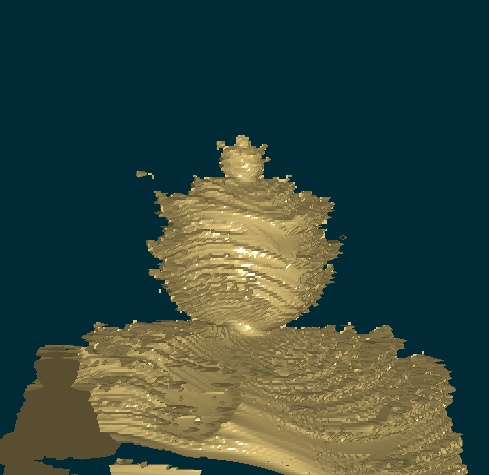

<!DOCTYPE html>
<html>
    <head>
        <meta http-equiv="Content-Type" content="text/html; charset=UTF-8" />
        <title>YBlog - Haskell Progressive Example</title>
        <meta name="keywords" content="Haskell, programming, functional, tutorial, fractal" />

        <link rel="shortcut icon" type="image/x-icon" href="../../../../Scratch/img/favicon.ico" />
        <link rel="stylesheet" type="text/css" href="../../../../Scratch/css/scientific.css" />
        <link rel="stylesheet" type="text/css" href="../../../../Scratch/css/solarized.css" />
		<!-- Font -->
        <link href="http://fonts.googleapis.com/css?family=Inconsolata" rel="stylesheet" type="text/css" />
		<link href="http://fonts.googleapis.com/css?family=Droid+Sans:400,700" rel="stylesheet" type="text/css" />
        <link rel="alternate" type="application/rss+xml" title="RSS" href="http://feeds.feedburner.com/yannespositocomen" />
        <!--[if lt IE 9]>
        <script src="http://ie7-js.googlecode.com/svn/version/2.1(beta4)/IE9.js"></script>
        <![endif]-->

    </head>
    <body lang="en">
        <div id="content">
	        			<div id="header">
			    <div id="choix">
        	        <div id="choixlang">
                        <a href="../../../../Scratch/fr/blog/Haskell-OpenGL-Mandelbrot/">French</a> 
        	        </div>
					<div id="switchcss"><a href="#">Change Theme</a></div>
                    <div class="tomenu"><a href="#navigation">↓ Menu ↓</a></div>
        	        <div class="flush"></div>
        	    </div>
			</div>

			<div id="titre">
				<h1>Haskell Progressive Example</h1>
			</div>
			<div class="flush"></div>
			<div id="afterheader" class="article">
				<div class="corps">
					<div>

</div>

<div class="intro">

<p><span class="sc"><abbr title="Too long; didn't read">tl;dr</abbr>: </span> A progressive Haskell example. A Mandelbrot set extended in 3D, rendered using OpenGL and coded with Haskell. In the end the code will be very clean. The significant stuff will be in a pure functional bubble. The display details will be put in an external module playing the role of a wrapper. Imperative language could also benefit from this functional organization.</p>
</div>

<h2 id="introduction">Introduction</h2>
<p>In my <a href="../../../../Scratch/en/blog/Haskell-the-Hard-Way/">preceding article</a> I introduced Haskell.</p>
<p>This article goes further. It will show how to use functional programming with interactive programs. But more than that, it will show how to organize your code in a functional way. This article is more about functional paradigm than functional language. The code organization can be used in most imperative language.</p>
<p>As Haskell is designed for functional paradigm, it is easier to use in this context. In reality, the firsts sections will use an imperative paradigm. As you can use functional paradigm in imperative language, you can also use imperative paradigm in functional languages.</p>
<p>This article is about creating an useful and clean program. It can interact with the user in real time. It uses OpenGL, a library with imperative programming foundations. Despite this fact, most of the final code will remain in the pure part (no <code>IO</code>).</p>
<p>I believe the main audience for this article are:</p>
<ul>
<li>Haskell programmer looking for an OpengGL tutorial.</li>
<li>People interested in program organization (programming language agnostic).</li>
<li>Fractal lovers and in particular 3D fractal.</li>
<li>People interested in user interaction in a functional paradigm.</li>
</ul>
<p>I had in mind for some time now to make a Mandelbrot set explorer. I had already written a <a href="http://github.com/yogsototh/mandelbrot.git">command line Mandelbrot set generator in Haskell</a>. This utility is highly parallel; it uses the <code>repa</code> package<sup><a href="#fn1" class="footnoteRef" id="fnref1">1</a></sup>.</p>
<p>This time, we will not parallelize the computation. Instead, we will display the Mandelbrot set extended in 3D using OpenGL and Haskell. You will be able to move it using your keyboard. This object is a Mandelbrot set in the plan (z=0), and something nice to see in 3D.</p>
<p>Here are some screenshots of the result:</p>
<figure>

<figcaption>
The entire Mandelbulb
</figcaption>
</figure>
<figure>

<figcaption>
A Mandelbulb detail
</figcaption>
</figure>
<figure>

<figcaption>
Another detail of the Mandelbulb
</figcaption>
</figure>

<p>And you can see the intermediate steps to reach this goal:</p>
<div>

</div>

<p>From the 2nd section to the 4th it will be <em>dirtier</em> and <em>dirtier</em>. We start cleaning the code at the 5th section.</p>
<hr />
<p><a href="code/01_Introduction/hglmandel.lhs" class="cut">Download the source code of this section → 01_Introduction/<strong>hglmandel.lhs</strong></a></p>
<h2 id="first-version">First version</h2>
<p>We can consider two parts. The first being mostly some boilerplate<sup><a href="#fn2" class="footnoteRef" id="fnref2">2</a></sup>. And the second part more focused on OpenGL and content.</p>
<h3 id="lets-play-the-song-of-our-people">Let’s play the song of our people</h3>
<div class="codehighlight">
<pre class="sourceCode haskell"><code class="sourceCode haskell"><span class="kw">import</span> Graphics.Rendering.OpenGL
<span class="kw">import</span> Graphics.UI.GLUT
<span class="kw">import</span> Data.IORef</code></pre>
</div>

<p>For efficiency reason<sup><a href="#fn3" class="footnoteRef" id="fnref3">3</a></sup>, I will not use the default Haskell <code>Complex</code> data type.</p>
<div class="codehighlight">
<pre class="sourceCode haskell"><code class="sourceCode haskell"><span class="kw">data</span> <span class="dt">Complex</span> <span class="fu">=</span> <span class="dt">C</span> (<span class="dt">Float</span>,<span class="dt">Float</span>) <span class="kw">deriving</span> (<span class="kw">Show</span>,<span class="kw">Eq</span>)</code></pre>
</div>

<div class="codehighlight">
<pre class="sourceCode haskell"><code class="sourceCode haskell"><span class="kw">instance</span> <span class="kw">Num</span> <span class="dt">Complex</span> <span class="kw">where</span>
    <span class="fu">fromInteger</span> n <span class="fu">=</span> <span class="dt">C</span> (<span class="fu">fromIntegral</span> n,<span class="dv">0</span><span class="fu">.</span><span class="dv">0</span>)
    <span class="dt">C</span> (x,y) <span class="fu">*</span> <span class="dt">C</span> (z,t) <span class="fu">=</span> <span class="dt">C</span> (z<span class="fu">*</span>x <span class="fu">-</span> y<span class="fu">*</span>t, y<span class="fu">*</span>z <span class="fu">+</span> x<span class="fu">*</span>t)
    <span class="dt">C</span> (x,y) <span class="fu">+</span> <span class="dt">C</span> (z,t) <span class="fu">=</span> <span class="dt">C</span> (x<span class="fu">+</span>z, y<span class="fu">+</span>t)
    <span class="fu">abs</span> (<span class="dt">C</span> (x,y))     <span class="fu">=</span> <span class="dt">C</span> (<span class="fu">sqrt</span> (x<span class="fu">*</span>x <span class="fu">+</span> y<span class="fu">*</span>y),<span class="dv">0</span><span class="fu">.</span><span class="dv">0</span>)
    <span class="fu">signum</span> (<span class="dt">C</span> (x,y))  <span class="fu">=</span> <span class="dt">C</span> (<span class="fu">signum</span> x , <span class="dv">0</span><span class="fu">.</span><span class="dv">0</span>)</code></pre>
</div>

<p>We declare some useful functions for manipulating complex numbers:</p>
<div class="codehighlight">
<pre class="sourceCode haskell"><code class="sourceCode haskell"><span class="ot">complex ::</span> <span class="dt">Float</span> <span class="ot">-&gt;</span> <span class="dt">Float</span> <span class="ot">-&gt;</span> <span class="dt">Complex</span>
complex x y <span class="fu">=</span> <span class="dt">C</span> (x,y)

<span class="ot">real ::</span> <span class="dt">Complex</span> <span class="ot">-&gt;</span> <span class="dt">Float</span>
real (<span class="dt">C</span> (x,y))    <span class="fu">=</span> x

<span class="ot">im ::</span> <span class="dt">Complex</span> <span class="ot">-&gt;</span> <span class="dt">Float</span>
im   (<span class="dt">C</span> (x,y))    <span class="fu">=</span> y

<span class="ot">magnitude ::</span> <span class="dt">Complex</span> <span class="ot">-&gt;</span> <span class="dt">Float</span>
magnitude <span class="fu">=</span> real<span class="fu">.abs</span></code></pre>
</div>

<h3 id="let-us-start">Let us start</h3>
<p>We start by giving the main architecture of our program:</p>
<div class="codehighlight">
<pre class="sourceCode haskell"><code class="sourceCode haskell"><span class="ot">main ::</span> <span class="dt">IO</span> ()
main <span class="fu">=</span> <span class="kw">do</span>
  <span class="co">-- GLUT need to be initialized</span>
  (progname,_) <span class="ot">&lt;-</span> getArgsAndInitialize
  <span class="co">-- We will use the double buffered mode (GL constraint)</span>
  initialDisplayMode <span class="fu">$=</span> [<span class="dt">DoubleBuffered</span>]
  <span class="co">-- We create a window with some title</span>
  createWindow <span class="st">&quot;Mandelbrot Set with Haskell and OpenGL&quot;</span>
  <span class="co">-- Each time we will need to update the display</span>
  <span class="co">-- we will call the function 'display'</span>
  displayCallback <span class="fu">$=</span> display
  <span class="co">-- We enter the main loop</span>
  mainLoop</code></pre>
</div>

<p>Mainly, we initialize our OpenGL application. We declared that the function <code>display</code> will be used to render the graphics:</p>
<div class="codehighlight">
<pre class="sourceCode haskell"><code class="sourceCode haskell">display <span class="fu">=</span> <span class="kw">do</span>
  clear [<span class="dt">ColorBuffer</span>] <span class="co">-- make the window black</span>
  loadIdentity <span class="co">-- reset any transformation</span>
  preservingMatrix drawMandelbrot
  swapBuffers <span class="co">-- refresh screen</span></code></pre>
</div>

<p>Also here, there is only one interesting line; the draw will occur in the function <code>drawMandelbrot</code>.</p>
<p>This function will provide a list of draw actions. Remember that OpenGL is imperative by design. Then, one of the consequence is you must write the actions in the right order. No easy parallel drawing here. Here is the function which will render something on the screen:</p>
<div class="codehighlight">
<pre class="sourceCode haskell"><code class="sourceCode haskell">drawMandelbrot <span class="fu">=</span>
  <span class="co">-- We will print Points (not triangles for example) </span>
  renderPrimitive <span class="dt">Points</span> <span class="fu">$</span> <span class="kw">do</span>
    <span class="fu">mapM_</span> drawColoredPoint allPoints
  <span class="kw">where</span>
      drawColoredPoint (x,y,c) <span class="fu">=</span> <span class="kw">do</span>
          color c <span class="co">-- set the current color to c</span>
          <span class="co">-- then draw the point at position (x,y,0)</span>
          <span class="co">-- remember we're in 3D</span>
          vertex <span class="fu">$</span> <span class="dt">Vertex3</span> x y <span class="dv">0</span> </code></pre>
</div>

<p>The <code>mapM_</code> function is mainly the same as map but inside a monadic context. More precisely, this can be transformed as a list of actions where the order is important:</p>
<pre><code>drawMandelbrot = 
  renderPrimitive Points $ do
    color color1
    vertex $ Vertex3 x1 y1 0
    ...
    color colorN
    vertex $ Vertex3 xN yN 0</code></pre>
<p>We also need some kind of global variables. In fact, global variable are a proof of a design problem. We will get rid of them later.</p>
<div class="codehighlight">
<pre class="sourceCode haskell"><code class="sourceCode haskell">width <span class="fu">=</span> <span class="dv">320</span><span class="ot"> ::</span> <span class="dt">GLfloat</span>
height <span class="fu">=</span> <span class="dv">320</span><span class="ot"> ::</span> <span class="dt">GLfloat</span></code></pre>
</div>

<p>And of course our list of colored points. In OpenGL the default coordinate are from -1 to 1.</p>
<div class="codehighlight">
<pre class="sourceCode haskell"><code class="sourceCode haskell"><span class="ot">allPoints ::</span> [(<span class="dt">GLfloat</span>,<span class="dt">GLfloat</span>,<span class="dt">Color3</span> <span class="dt">GLfloat</span>)]
allPoints <span class="fu">=</span> [ (x<span class="fu">/</span>width,y<span class="fu">/</span>height,colorFromValue <span class="fu">$</span> mandel x y) <span class="fu">|</span> 
                  x <span class="ot">&lt;-</span> [<span class="fu">-</span>width<span class="fu">..</span>width], 
                  y <span class="ot">&lt;-</span> [<span class="fu">-</span>height<span class="fu">..</span>height]]</code></pre>
</div>

<p>We need a function which transform an integer value to some color:</p>
<div class="codehighlight">
<pre class="sourceCode haskell"><code class="sourceCode haskell">colorFromValue n <span class="fu">=</span>
  <span class="kw">let</span> 
<span class="ot">      t ::</span> <span class="dt">Int</span> <span class="ot">-&gt;</span> <span class="dt">GLfloat</span>
      t i <span class="fu">=</span> <span class="dv">0</span><span class="fu">.</span><span class="dv">5</span> <span class="fu">+</span> <span class="dv">0</span><span class="fu">.</span><span class="dv">5</span><span class="fu">*cos</span>( <span class="fu">fromIntegral</span> i <span class="fu">/</span> <span class="dv">10</span> )
  <span class="kw">in</span>
    <span class="dt">Color3</span> (t n) (t (n<span class="fu">+</span><span class="dv">5</span>)) (t (n<span class="fu">+</span><span class="dv">10</span>))</code></pre>
</div>

<p>And now the <code>mandel</code> function. Given two coordinates in pixels, it returns some integer value:</p>
<div class="codehighlight">
<pre class="sourceCode haskell"><code class="sourceCode haskell">mandel x y <span class="fu">=</span> 
  <span class="kw">let</span> r <span class="fu">=</span> <span class="dv">2</span><span class="fu">.</span><span class="dv">0</span> <span class="fu">*</span> x <span class="fu">/</span> width
      i <span class="fu">=</span> <span class="dv">2</span><span class="fu">.</span><span class="dv">0</span> <span class="fu">*</span> y <span class="fu">/</span> height
  <span class="kw">in</span>
      f (complex r i) <span class="dv">0</span> <span class="dv">64</span></code></pre>
</div>

<p>It uses the main Mandelbrot function for each complex \(c\). The Mandelbrot set is the set of complex number \(c\) such that the following sequence does not escape to infinity.</p>
<p>Let us define \(f_c:  \)</p>
<p><br /><span class="math"><em>f</em><sub><em>c</em></sub>(<em>z</em>) = <em>z</em><sup>2</sup> + <em>c</em></span><br /></p>
<p>The sequence is:</p>
<p><br /><span class="math">0 → <em>f</em><sub><em>c</em></sub>(0) → <em>f</em><sub><em>c</em></sub>(<em>f</em><sub><em>c</em></sub>(0)) → ⋯ → <em>f</em><sub><em>c</em></sub><sup><em>n</em></sup>(0) → ⋯</span><br /></p>
<p>Of course, instead of trying to test the real limit, we just make a test after a finite number of occurrences.</p>
<div class="codehighlight">
<pre class="sourceCode haskell"><code class="sourceCode haskell"><span class="ot">f ::</span> <span class="dt">Complex</span> <span class="ot">-&gt;</span> <span class="dt">Complex</span> <span class="ot">-&gt;</span> <span class="dt">Int</span> <span class="ot">-&gt;</span> <span class="dt">Int</span>
f c z <span class="dv">0</span> <span class="fu">=</span> <span class="dv">0</span>
f c z n <span class="fu">=</span> <span class="kw">if</span> (magnitude z <span class="fu">&gt;</span> <span class="dv">2</span> ) 
          <span class="kw">then</span> n
          <span class="kw">else</span> f c ((z<span class="fu">*</span>z)<span class="fu">+</span>c) (n<span class="fu">-</span><span class="dv">1</span>)</code></pre>
</div>

<p>Well, if you download this file (look at the bottom of this section), compile it and run it this is the result:</p>
<div>

</div>

<p>A first very interesting property of this program is that the computation for all the points is done only once. It is a bit long before the first image appears, but if you resize the window, it updates instantaneously. This property is a direct consequence of purity. If you look closely, you see that <code>allPoints</code> is a pure list. Therefore, calling <code>allPoints</code> will always render the same result and Haskell is clever enough to use this property. While Haskell doesn’t garbage collect <code>allPoints</code> the result is reused for free. We did not specified this value should be saved for later use. It is saved for us.</p>
<p>See what occurs if we make the window bigger:</p>
<div>

</div>

<p>We see some black lines because we have drawn less point than there is on the surface. We can repair this by drawing little squares instead of just points. But, instead we will do something a bit different and unusual.</p>
<p><a href="code/01_Introduction/hglmandel.lhs" class="cut">Download the source code of this section → 01_Introduction/<strong>hglmandel.lhs</strong> </a></p>
<hr />
<p><a href="code/02_Edges/HGLMandelEdge.lhs" class="cut">Download the source code of this section → 02_Edges/<strong>HGLMandelEdge.lhs</strong></a></p>
<h2 id="only-the-edges">Only the edges</h2>
<div style="display:none">

<div class="codehighlight">
<pre class="sourceCode haskell"><code class="sourceCode haskell"><span class="kw">import</span> Graphics.Rendering.OpenGL
<span class="kw">import</span> Graphics.UI.GLUT
<span class="kw">import</span> Data.IORef
<span class="co">-- Use UNPACK data because it is faster</span>
<span class="co">-- The ! is for strict instead of lazy</span>
<span class="kw">data</span> <span class="dt">Complex</span> <span class="fu">=</span> <span class="dt">C</span>  <span class="ot">{-# UNPACK #-}</span> <span class="fu">!</span><span class="dt">Float</span> 
                  <span class="ot">{-# UNPACK #-}</span> <span class="fu">!</span><span class="dt">Float</span> 
               <span class="kw">deriving</span> (<span class="kw">Show</span>,<span class="kw">Eq</span>)
<span class="kw">instance</span> <span class="kw">Num</span> <span class="dt">Complex</span> <span class="kw">where</span>
    <span class="fu">fromInteger</span> n <span class="fu">=</span> <span class="dt">C</span> (<span class="fu">fromIntegral</span> n) <span class="dv">0</span><span class="fu">.</span><span class="dv">0</span>
    (<span class="dt">C</span> x y) <span class="fu">*</span> (<span class="dt">C</span> z t) <span class="fu">=</span> <span class="dt">C</span> (z<span class="fu">*</span>x <span class="fu">-</span> y<span class="fu">*</span>t) (y<span class="fu">*</span>z <span class="fu">+</span> x<span class="fu">*</span>t)
    (<span class="dt">C</span> x y) <span class="fu">+</span> (<span class="dt">C</span> z t) <span class="fu">=</span> <span class="dt">C</span> (x<span class="fu">+</span>z) (y<span class="fu">+</span>t)
    <span class="fu">abs</span> (<span class="dt">C</span> x y)     <span class="fu">=</span> <span class="dt">C</span> (<span class="fu">sqrt</span> (x<span class="fu">*</span>x <span class="fu">+</span> y<span class="fu">*</span>y)) <span class="dv">0</span><span class="fu">.</span><span class="dv">0</span>
    <span class="fu">signum</span> (<span class="dt">C</span> x y)  <span class="fu">=</span> <span class="dt">C</span> (<span class="fu">signum</span> x) <span class="dv">0</span><span class="fu">.</span><span class="dv">0</span>
<span class="ot">complex ::</span> <span class="dt">Float</span> <span class="ot">-&gt;</span> <span class="dt">Float</span> <span class="ot">-&gt;</span> <span class="dt">Complex</span>
complex x y <span class="fu">=</span> <span class="dt">C</span> x y

<span class="ot">real ::</span> <span class="dt">Complex</span> <span class="ot">-&gt;</span> <span class="dt">Float</span>
real (<span class="dt">C</span> x y)    <span class="fu">=</span> x

<span class="ot">im ::</span> <span class="dt">Complex</span> <span class="ot">-&gt;</span> <span class="dt">Float</span>
im   (<span class="dt">C</span> x y)    <span class="fu">=</span> y

<span class="ot">magnitude ::</span> <span class="dt">Complex</span> <span class="ot">-&gt;</span> <span class="dt">Float</span>
magnitude <span class="fu">=</span> real<span class="fu">.abs</span>
<span class="ot">main ::</span> <span class="dt">IO</span> ()
main <span class="fu">=</span> <span class="kw">do</span>
  <span class="co">-- GLUT need to be initialized</span>
  (progname,_) <span class="ot">&lt;-</span> getArgsAndInitialize
  <span class="co">-- We will use the double buffered mode (GL constraint)</span>
  initialDisplayMode <span class="fu">$=</span> [<span class="dt">DoubleBuffered</span>]
  <span class="co">-- We create a window with some title</span>
  createWindow <span class="st">&quot;Mandelbrot Set with Haskell and OpenGL&quot;</span>
  <span class="co">-- Each time we will need to update the display</span>
  <span class="co">-- we will call the function 'display'</span>
  displayCallback <span class="fu">$=</span> display
  <span class="co">-- We enter the main loop</span>
  mainLoop
display <span class="fu">=</span> <span class="kw">do</span>
   <span class="co">-- set the background color (dark solarized theme)</span>
  clearColor <span class="fu">$=</span> <span class="dt">Color4</span> <span class="dv">0</span> <span class="dv">0</span><span class="fu">.</span><span class="dv">1686</span> <span class="dv">0</span><span class="fu">.</span><span class="dv">2117</span> <span class="dv">1</span>
  clear [<span class="dt">ColorBuffer</span>] <span class="co">-- make the window black</span>
  loadIdentity <span class="co">-- reset any transformation</span>
  preservingMatrix drawMandelbrot
  swapBuffers <span class="co">-- refresh screen</span>

width <span class="fu">=</span> <span class="dv">320</span><span class="ot"> ::</span> <span class="dt">GLfloat</span>
height <span class="fu">=</span> <span class="dv">320</span><span class="ot"> ::</span> <span class="dt">GLfloat</span></code></pre>
</div>

</div>

<p>This time, instead of drawing all points, we will simply draw the edges of the Mandelbrot set. The method I use is a rough approximation. I consider the Mandelbrot set to be almost convex. The result will be good enough for the purpose of this tutorial.</p>
<p>We change slightly the <code>drawMandelbrot</code> function. We replace the <code>Points</code> by <code>LineLoop</code></p>
<div class="codehighlight">
<pre class="sourceCode haskell"><code class="sourceCode haskell">drawMandelbrot <span class="fu">=</span>
  <span class="co">-- We will print Points (not triangles for example) </span>
  renderPrimitive <span class="dt">LineLoop</span> <span class="fu">$</span> <span class="kw">do</span>
    <span class="fu">mapM_</span> drawColoredPoint allPoints
  <span class="kw">where</span>
      drawColoredPoint (x,y,c) <span class="fu">=</span> <span class="kw">do</span>
          color c <span class="co">-- set the current color to c</span>
          <span class="co">-- then draw the point at position (x,y,0)</span>
          <span class="co">-- remember we're in 3D</span>
          vertex <span class="fu">$</span> <span class="dt">Vertex3</span> x y <span class="dv">0</span> </code></pre>
</div>

<p>And now, we should change our list of points. Instead of drawing every point of the visible surface, we will choose only point on the surface.</p>
<div class="codehighlight">
<pre class="sourceCode haskell"><code class="sourceCode haskell">allPoints <span class="fu">=</span> positivePoints <span class="fu">++</span> 
      <span class="fu">map</span> (\(x,y,c) <span class="ot">-&gt;</span> (x,<span class="fu">-</span>y,c)) (<span class="fu">reverse</span> positivePoints)</code></pre>
</div>

<p>We only need to compute the positive point. The Mandelbrot set is symmetric relatively to the abscisse axis.</p>
<div class="codehighlight">
<pre class="sourceCode haskell"><code class="sourceCode haskell"><span class="ot">positivePoints ::</span> [(<span class="dt">GLfloat</span>,<span class="dt">GLfloat</span>,<span class="dt">Color3</span> <span class="dt">GLfloat</span>)]
positivePoints <span class="fu">=</span> <span class="kw">do</span>
     x <span class="ot">&lt;-</span> [<span class="fu">-</span>width<span class="fu">..</span>width]
     <span class="kw">let</span> y <span class="fu">=</span> maxZeroIndex (mandel x) <span class="dv">0</span> height (log2 height)
     <span class="kw">if</span> y <span class="fu">&lt;</span> <span class="dv">1</span> <span class="co">-- We don't draw point in the absciss</span>
        <span class="kw">then</span> []
        <span class="kw">else</span> <span class="fu">return</span> (x<span class="fu">/</span>width,y<span class="fu">/</span>height,colorFromValue <span class="fu">$</span> mandel x y)
     <span class="kw">where</span>
         log2 n <span class="fu">=</span> <span class="fu">floor</span> ((<span class="fu">log</span> n) <span class="fu">/</span> <span class="fu">log</span> <span class="dv">2</span>)</code></pre>
</div>

<p>This function is interesting. For those not used to the list monad here is a natural language version of this function:</p>
<pre class="no-highlight"><code>positivePoints =
    for all x in the range [-width..width]
    let y be smallest number s.t. mandel x y &gt; 0
    if y is on 0 then don't return a point
    else return the value corresonding to (x,y,color for (x+iy))</code></pre>
<p>In fact using the list monad you write like if you consider only one element at a time and the computation is done non deterministically. To find the smallest number such that <code>mandel x y &gt; 0</code> we use a simple dichotomy:</p>
<div class="codehighlight">
<pre class="sourceCode haskell"><code class="sourceCode haskell"><span class="co">-- given f min max nbtest,</span>
<span class="co">-- considering </span>
<span class="co">--  - f is an increasing function</span>
<span class="co">--  - f(min)=0</span>
<span class="co">--  - f(max)≠0</span>
<span class="co">-- then maxZeroIndex f min max nbtest returns x such that</span>
<span class="co">--    f(x - ε)=0 and f(x + ε)≠0</span>
<span class="co">--    where ε=(max-min)/2^(nbtest+1) </span>
maxZeroIndex func minval maxval <span class="dv">0</span> <span class="fu">=</span> (minval<span class="fu">+</span>maxval)<span class="fu">/</span><span class="dv">2</span>
maxZeroIndex func minval maxval n <span class="fu">=</span> 
  <span class="kw">if</span> (func medpoint) <span class="fu">/=</span> <span class="dv">0</span> 
       <span class="kw">then</span> maxZeroIndex func minval medpoint (n<span class="fu">-</span><span class="dv">1</span>)
       <span class="kw">else</span> maxZeroIndex func medpoint maxval (n<span class="fu">-</span><span class="dv">1</span>)
  <span class="kw">where</span> medpoint <span class="fu">=</span> (minval<span class="fu">+</span>maxval)<span class="fu">/</span><span class="dv">2</span></code></pre>
</div>

<p>No rocket science here. See the result now:</p>
<div>

</div>

<div style="display:none">

<div class="codehighlight">
<pre class="sourceCode haskell"><code class="sourceCode haskell">colorFromValue n <span class="fu">=</span>
  <span class="kw">let</span> 
<span class="ot">      t ::</span> <span class="dt">Int</span> <span class="ot">-&gt;</span> <span class="dt">GLfloat</span>
      t i <span class="fu">=</span> <span class="dv">0</span><span class="fu">.</span><span class="dv">5</span> <span class="fu">+</span> <span class="dv">0</span><span class="fu">.</span><span class="dv">5</span><span class="fu">*cos</span>( <span class="fu">fromIntegral</span> i <span class="fu">/</span> <span class="dv">10</span> )
  <span class="kw">in</span>
    <span class="dt">Color3</span> (t n) (t (n<span class="fu">+</span><span class="dv">5</span>)) (t (n<span class="fu">+</span><span class="dv">10</span>))</code></pre>
</div>

<div class="codehighlight">
<pre class="sourceCode haskell"><code class="sourceCode haskell">mandel x y <span class="fu">=</span> 
  <span class="kw">let</span> r <span class="fu">=</span> <span class="dv">2</span><span class="fu">.</span><span class="dv">0</span> <span class="fu">*</span> x <span class="fu">/</span> width
      i <span class="fu">=</span> <span class="dv">2</span><span class="fu">.</span><span class="dv">0</span> <span class="fu">*</span> y <span class="fu">/</span> height
  <span class="kw">in</span>
      f (complex r i) <span class="dv">0</span> <span class="dv">64</span></code></pre>
</div>

<div class="codehighlight">
<pre class="sourceCode haskell"><code class="sourceCode haskell"><span class="ot">f ::</span> <span class="dt">Complex</span> <span class="ot">-&gt;</span> <span class="dt">Complex</span> <span class="ot">-&gt;</span> <span class="dt">Int</span> <span class="ot">-&gt;</span> <span class="dt">Int</span>
f c z <span class="dv">0</span> <span class="fu">=</span> <span class="dv">0</span>
f c z n <span class="fu">=</span> <span class="kw">if</span> (magnitude z <span class="fu">&gt;</span> <span class="dv">2</span> ) 
          <span class="kw">then</span> n
          <span class="kw">else</span> f c ((z<span class="fu">*</span>z)<span class="fu">+</span>c) (n<span class="fu">-</span><span class="dv">1</span>)</code></pre>
</div>

</div>

<p><a href="code/02_Edges/HGLMandelEdge.lhs" class="cut">Download the source code of this section → 02_Edges/<strong>HGLMandelEdge.lhs</strong> </a></p>
<hr />
<p><a href="code/03_Mandelbulb/Mandelbulb.lhs" class="cut">Download the source code of this section → 03_Mandelbulb/<strong>Mandelbulb.lhs</strong></a></p>
<h2 id="d-mandelbrot">3D Mandelbrot?</h2>
<p>Now we will we extend to a third dimension. But, there is no 3D equivalent to complex. In fact, the only extension known are quaternions (in 4D). As I know almost nothing about quaternions, I will use some extended complex, instead of using a 3D projection of quaternions. I am pretty sure this construction is not useful for numbers. But it will be enough for us to create something that look nice.</p>
<p>This section is quite long, but don’t be afraid, most of the code is some OpenGL boilerplate. If you just want to skim this section, here is a high level representation:</p>
<blockquote>
<ul>
<li><p>OpenGL Boilerplate</p></li>
<li>set some IORef (understand variables) for states<br /></li>
<li><p>Drawing:</p>
<ul>
<li>set doubleBuffer, handle depth, window size…</li>
<li>Use state to apply some transformations</li>
</ul></li>
<li><p>Keyboard: hitting some key change the state of IORef</p></li>
<li><p>Generate 3D Object</p></li>
</ul>
<p><sub>~</sub> allPoints :: [ColoredPoint]<br /> allPoints = for all (x,y), -width<x<width, 0<y<height Let z be the minimal depth such that mandel x y z> 0 add the points (x, y, z,color) (x,-y, z,color) (x, y,-z,color) (x,-y,-z,color) + neighbors to make triangles <sub>~</sub></p>
</blockquote>
<div style="display:none">

<div class="codehighlight">
<pre class="sourceCode haskell"><code class="sourceCode haskell"><span class="kw">import</span> Graphics.Rendering.OpenGL
<span class="kw">import</span> Graphics.UI.GLUT
<span class="kw">import</span> Data.IORef
<span class="kw">type</span> <span class="dt">ColoredPoint</span> <span class="fu">=</span> (<span class="dt">GLfloat</span>,<span class="dt">GLfloat</span>,<span class="dt">GLfloat</span>,<span class="dt">Color3</span> <span class="dt">GLfloat</span>)</code></pre>
</div>

</div>

<p>We declare a new type <code>ExtComplex</code> (for extended complex). An extension of complex numbers with a third component:</p>
<div class="codehighlight">
<pre class="sourceCode haskell"><code class="sourceCode haskell"><span class="kw">data</span> <span class="dt">ExtComplex</span> <span class="fu">=</span> <span class="dt">C</span> (<span class="dt">GLfloat</span>,<span class="dt">GLfloat</span>,<span class="dt">GLfloat</span>) 
                  <span class="kw">deriving</span> (<span class="kw">Show</span>,<span class="kw">Eq</span>)
<span class="kw">instance</span> <span class="kw">Num</span> <span class="dt">ExtComplex</span> <span class="kw">where</span>
    <span class="co">-- The shape of the 3D mandelbrot </span>
    <span class="co">-- will depend on this formula</span>
    <span class="dt">C</span> (x,y,z) <span class="fu">*</span> <span class="dt">C</span> (x',y',z') <span class="fu">=</span> <span class="dt">C</span> (x<span class="fu">*</span>x' <span class="fu">-</span> y<span class="fu">*</span>y' <span class="fu">-</span> z<span class="fu">*</span>z', 
                                  x<span class="fu">*</span>y' <span class="fu">+</span> y<span class="fu">*</span>x' <span class="fu">+</span> z<span class="fu">*</span>z', 
                                  x<span class="fu">*</span>z' <span class="fu">+</span> z<span class="fu">*</span>x' )
    <span class="co">-- The rest is straightforward</span>
    <span class="fu">fromInteger</span> n <span class="fu">=</span> <span class="dt">C</span> (<span class="fu">fromIntegral</span> n, <span class="dv">0</span>, <span class="dv">0</span>)
    <span class="dt">C</span> (x,y,z) <span class="fu">+</span> <span class="dt">C</span> (x',y',z') <span class="fu">=</span> <span class="dt">C</span> (x<span class="fu">+</span>x', y<span class="fu">+</span>y', z<span class="fu">+</span>z')
    <span class="fu">abs</span> (<span class="dt">C</span> (x,y,z))     <span class="fu">=</span> <span class="dt">C</span> (<span class="fu">sqrt</span> (x<span class="fu">*</span>x <span class="fu">+</span> y<span class="fu">*</span>y <span class="fu">+</span> z<span class="fu">*</span>z), <span class="dv">0</span>, <span class="dv">0</span>)
    <span class="fu">signum</span> (<span class="dt">C</span> (x,y,z))  <span class="fu">=</span> <span class="dt">C</span> (<span class="fu">signum</span> x, <span class="fu">signum</span> y, <span class="fu">signum</span> z)</code></pre>
</div>

<p>The most important part is the new multiplication instance. Modifying this formula will change radically the shape of the result. Here is the formula written in a more mathematical notation. I called the third component of these extended complex <em>strange</em>.</p>
<p><br /><span class="math">real((<em>x</em>, <em>y</em>, <em>z</em>) * (<em>x</em>ʹ, <em>y</em>ʹ, <em>z</em>ʹ)) = <em>x</em><em>x</em>ʹ − <em>y</em><em>y</em>ʹ − <em>z</em><em>z</em>ʹ</span><br /></p>
<p><br /><span class="math">im((<em>x</em>, <em>y</em>, <em>z</em>) * (<em>x</em>ʹ, <em>y</em>ʹ, <em>z</em>ʹ)) = <em>x</em><em>y</em>ʹ − <em>y</em><em>x</em>ʹ + <em>z</em><em>z</em>ʹ</span><br /></p>
<p><br /><span class="math">strange((<em>x</em>, <em>y</em>, <em>z</em>) * (<em>x</em>ʹ, <em>y</em>ʹ, <em>z</em>ʹ)) = <em>x</em><em>z</em>ʹ + <em>z</em><em>x</em>ʹ</span><br /></p>
<p>Note how if <code>z=z'=0</code> then the multiplication is the same to the complex one.</p>
<div style="display:none">

<div class="codehighlight">
<pre class="sourceCode haskell"><code class="sourceCode haskell"><span class="ot">extcomplex ::</span> <span class="dt">GLfloat</span> <span class="ot">-&gt;</span> <span class="dt">GLfloat</span> <span class="ot">-&gt;</span> <span class="dt">GLfloat</span> <span class="ot">-&gt;</span> <span class="dt">ExtComplex</span>
extcomplex x y z <span class="fu">=</span> <span class="dt">C</span> (x,y,z)

<span class="ot">real ::</span> <span class="dt">ExtComplex</span> <span class="ot">-&gt;</span> <span class="dt">GLfloat</span>
real (<span class="dt">C</span> (x,y,z))    <span class="fu">=</span> x

<span class="ot">im ::</span> <span class="dt">ExtComplex</span> <span class="ot">-&gt;</span> <span class="dt">GLfloat</span>
im   (<span class="dt">C</span> (x,y,z))    <span class="fu">=</span> y

<span class="ot">strange ::</span> <span class="dt">ExtComplex</span> <span class="ot">-&gt;</span> <span class="dt">GLfloat</span>
strange (<span class="dt">C</span> (x,y,z)) <span class="fu">=</span> z

<span class="ot">magnitude ::</span> <span class="dt">ExtComplex</span> <span class="ot">-&gt;</span> <span class="dt">GLfloat</span>
magnitude <span class="fu">=</span> real<span class="fu">.abs</span></code></pre>
</div>

</div>

<h3 id="from-2d-to-3d">From 2D to 3D</h3>
<p>As we will use some 3D, we add some new directive in the boilerplate. But mainly, we simply state that will use some depth buffer. And also we will listen the keyboard.</p>
<div class="codehighlight">
<pre class="sourceCode haskell"><code class="sourceCode haskell"><span class="ot">main ::</span> <span class="dt">IO</span> ()
main <span class="fu">=</span> <span class="kw">do</span>
  <span class="co">-- GLUT need to be initialized</span>
  (progname,_) <span class="ot">&lt;-</span> getArgsAndInitialize
  <span class="co">-- We will use the double buffered mode (GL constraint)</span>
  <span class="co">-- We also Add the DepthBuffer (for 3D)</span>
  initialDisplayMode <span class="fu">$=</span> 
      [<span class="dt">WithDepthBuffer</span>,<span class="dt">DoubleBuffered</span>,<span class="dt">RGBMode</span>]
  <span class="co">-- We create a window with some title</span>
  createWindow <span class="st">&quot;3D HOpengGL Mandelbrot&quot;</span>
  <span class="co">-- We add some directives</span>
  depthFunc  <span class="fu">$=</span> <span class="kw">Just</span> <span class="dt">Less</span>
  windowSize <span class="fu">$=</span> <span class="dt">Size</span> <span class="dv">500</span> <span class="dv">500</span>
  <span class="co">-- Some state variables (I know it feels BAD)</span>
  angle   <span class="ot">&lt;-</span> newIORef ((<span class="dv">35</span>,<span class="dv">0</span>)<span class="ot">::</span>(<span class="dt">GLfloat</span>,<span class="dt">GLfloat</span>))
  zoom    <span class="ot">&lt;-</span> newIORef (<span class="dv">2</span><span class="ot">::</span><span class="dt">GLfloat</span>)
  campos  <span class="ot">&lt;-</span> newIORef ((<span class="dv">0</span><span class="fu">.</span><span class="dv">7</span>,<span class="dv">0</span>)<span class="ot">::</span>(<span class="dt">GLfloat</span>,<span class="dt">GLfloat</span>))
  <span class="co">-- Function to call each frame</span>
  idleCallback <span class="fu">$=</span> <span class="kw">Just</span> idle
  <span class="co">-- Function to call when keyboard or mouse is used</span>
  keyboardMouseCallback <span class="fu">$=</span> 
          <span class="kw">Just</span> (keyboardMouse angle zoom campos)
  <span class="co">-- Each time we will need to update the display</span>
  <span class="co">-- we will call the function 'display'</span>
  <span class="co">-- But this time, we add some parameters</span>
  displayCallback <span class="fu">$=</span> display angle zoom campos
  <span class="co">-- We enter the main loop</span>
  mainLoop</code></pre>
</div>

<p>The <code>idle</code> is here to change the states. There should never be any modification done in the <code>display</code> function.</p>
<div class="codehighlight">
<pre class="sourceCode haskell"><code class="sourceCode haskell">idle <span class="fu">=</span> postRedisplay <span class="kw">Nothing</span></code></pre>
</div>

<p>We introduce some helper function to manipulate standard <code>IORef</code>. Mainly <code>modVar x f</code> is equivalent to the imperative <code>x:=f(x)</code>, <code>modFst (x,y) (+1)</code> is equivalent to <code>(x,y) := (x+1,y)</code> and <code>modSnd (x,y) (+1)</code> is equivalent to <code>(x,y) := (x,y+1)</code></p>
<div class="codehighlight">
<pre class="sourceCode haskell"><code class="sourceCode haskell">modVar v f <span class="fu">=</span> <span class="kw">do</span>
  v' <span class="ot">&lt;-</span> get v
  v <span class="fu">$=</span> (f v')
mapFst f (x,y) <span class="fu">=</span> (f x,  y)
mapSnd f (x,y) <span class="fu">=</span> (  x,f y)</code></pre>
</div>

<p>And we use them to code the function handling keyboard. We will use the keys <code>hjkl</code> to rotate, <code>oi</code> to zoom and <code>sedf</code> to move. Also, hitting space will reset the view. Remember that <code>angle</code> and <code>campos</code> are pairs and <code>zoom</code> is a scalar. Also note <code>(+0.5)</code> is the function <code>\x-&gt;x+0.5</code> and <code>(-0.5)</code> is the number <code>-0.5</code> (yes I share your pain).</p>
<div class="codehighlight">
<pre class="sourceCode haskell"><code class="sourceCode haskell">keyboardMouse angle zoom campos key state modifiers position <span class="fu">=</span>
  <span class="co">-- We won't use modifiers nor position</span>
  kact angle zoom campos key state
  <span class="kw">where</span> 
    <span class="co">-- reset view when hitting space</span>
    kact a z p (<span class="dt">Char</span> <span class="ch">' '</span>) <span class="dt">Down</span> <span class="fu">=</span> <span class="kw">do</span>
          a <span class="fu">$=</span> (<span class="dv">0</span>,<span class="dv">0</span>) <span class="co">-- angle </span>
          z <span class="fu">$=</span> <span class="dv">1</span>     <span class="co">-- zoom</span>
          p <span class="fu">$=</span> (<span class="dv">0</span>,<span class="dv">0</span>) <span class="co">-- camera position</span>
    <span class="co">-- use of hjkl to rotate</span>
    kact a _ _ (<span class="dt">Char</span> <span class="ch">'h'</span>) <span class="dt">Down</span> <span class="fu">=</span> modVar a (mapFst (<span class="fu">+</span><span class="dv">0</span><span class="fu">.</span><span class="dv">5</span>))
    kact a _ _ (<span class="dt">Char</span> <span class="ch">'l'</span>) <span class="dt">Down</span> <span class="fu">=</span> modVar a (mapFst (<span class="fu">+</span>(<span class="fu">-</span><span class="dv">0</span><span class="fu">.</span><span class="dv">5</span>)))
    kact a _ _ (<span class="dt">Char</span> <span class="ch">'j'</span>) <span class="dt">Down</span> <span class="fu">=</span> modVar a (mapSnd (<span class="fu">+</span><span class="dv">0</span><span class="fu">.</span><span class="dv">5</span>))
    kact a _ _ (<span class="dt">Char</span> <span class="ch">'k'</span>) <span class="dt">Down</span> <span class="fu">=</span> modVar a (mapSnd (<span class="fu">+</span>(<span class="fu">-</span><span class="dv">0</span><span class="fu">.</span><span class="dv">5</span>)))
    <span class="co">-- use o and i to zoom</span>
    kact _ z _ (<span class="dt">Char</span> <span class="ch">'o'</span>) <span class="dt">Down</span> <span class="fu">=</span> modVar z (<span class="fu">*</span><span class="dv">1</span><span class="fu">.</span><span class="dv">1</span>)
    kact _ z _ (<span class="dt">Char</span> <span class="ch">'i'</span>) <span class="dt">Down</span> <span class="fu">=</span> modVar z (<span class="fu">*</span><span class="dv">0</span><span class="fu">.</span><span class="dv">9</span>)
    <span class="co">-- use sdfe to move the camera</span>
    kact _ _ p (<span class="dt">Char</span> <span class="ch">'s'</span>) <span class="dt">Down</span> <span class="fu">=</span> modVar p (mapFst (<span class="fu">+</span><span class="dv">0</span><span class="fu">.</span><span class="dv">1</span>))
    kact _ _ p (<span class="dt">Char</span> <span class="ch">'f'</span>) <span class="dt">Down</span> <span class="fu">=</span> modVar p (mapFst (<span class="fu">+</span>(<span class="fu">-</span><span class="dv">0</span><span class="fu">.</span><span class="dv">1</span>)))
    kact _ _ p (<span class="dt">Char</span> <span class="ch">'d'</span>) <span class="dt">Down</span> <span class="fu">=</span> modVar p (mapSnd (<span class="fu">+</span><span class="dv">0</span><span class="fu">.</span><span class="dv">1</span>))
    kact _ _ p (<span class="dt">Char</span> <span class="ch">'e'</span>) <span class="dt">Down</span> <span class="fu">=</span> modVar p (mapSnd (<span class="fu">+</span>(<span class="fu">-</span><span class="dv">0</span><span class="fu">.</span><span class="dv">1</span>)))
    <span class="co">-- any other keys does nothing</span>
    kact _ _ _ _ _ <span class="fu">=</span> <span class="fu">return</span> ()</code></pre>
</div>

<p>Note <code>display</code> takes some parameters this time. This function if full of boilerplate:</p>
<div class="codehighlight">
<pre class="sourceCode haskell"><code class="sourceCode haskell">display angle zoom position <span class="fu">=</span> <span class="kw">do</span>
   <span class="co">-- set the background color (dark solarized theme)</span>
  clearColor <span class="fu">$=</span> <span class="dt">Color4</span> <span class="dv">0</span> <span class="dv">0</span><span class="fu">.</span><span class="dv">1686</span> <span class="dv">0</span><span class="fu">.</span><span class="dv">2117</span> <span class="dv">1</span>
  clear [<span class="dt">ColorBuffer</span>,<span class="dt">DepthBuffer</span>]
  <span class="co">-- Transformation to change the view</span>
  loadIdentity <span class="co">-- reset any transformation</span>
  <span class="co">-- tranlate</span>
  (x,y) <span class="ot">&lt;-</span> get position
  translate <span class="fu">$</span> <span class="dt">Vector3</span> x y <span class="dv">0</span> 
  <span class="co">-- zoom</span>
  z <span class="ot">&lt;-</span> get zoom
  scale z z z
  <span class="co">-- rotate</span>
  (xangle,yangle) <span class="ot">&lt;-</span> get angle
  rotate xangle <span class="fu">$</span> <span class="dt">Vector3</span> <span class="dv">1</span><span class="fu">.</span><span class="dv">0</span> <span class="dv">0</span><span class="fu">.</span><span class="dv">0</span> (<span class="dv">0</span><span class="fu">.</span><span class="dv">0</span><span class="ot">::</span><span class="dt">GLfloat</span>)
  rotate yangle <span class="fu">$</span> <span class="dt">Vector3</span> <span class="dv">0</span><span class="fu">.</span><span class="dv">0</span> <span class="dv">1</span><span class="fu">.</span><span class="dv">0</span> (<span class="dv">0</span><span class="fu">.</span><span class="dv">0</span><span class="ot">::</span><span class="dt">GLfloat</span>)

  <span class="co">-- Now that all transformation were made</span>
  <span class="co">-- We create the object(s)</span>
  preservingMatrix drawMandelbrot

  swapBuffers <span class="co">-- refresh screen</span></code></pre>
</div>

<p>Not much to say about this function. Mainly there are two parts: apply some transformations, draw the object.</p>
<h3 id="the-3d-mandelbrot">The 3D Mandelbrot</h3>
<p>We have finished with the OpenGL section, let’s talk about how we generate the 3D points and colors. First, we will set the number of details to 200 pixels in the three dimensions.</p>
<div class="codehighlight">
<pre class="sourceCode haskell"><code class="sourceCode haskell">nbDetails <span class="fu">=</span> <span class="dv">200</span><span class="ot"> ::</span> <span class="dt">GLfloat</span>
width  <span class="fu">=</span> nbDetails
height <span class="fu">=</span> nbDetails
deep   <span class="fu">=</span> nbDetails</code></pre>
</div>

<p>This time, instead of just drawing some line or some group of points, we will show triangles. The function <code>allPoints</code> will provide a multiple of three points. Each three successive point representing the coordinate of each vertex of a triangle.</p>
<div class="codehighlight">
<pre class="sourceCode haskell"><code class="sourceCode haskell">drawMandelbrot <span class="fu">=</span> <span class="kw">do</span>
  <span class="co">-- We will print Points (not triangles for example) </span>
  renderPrimitive <span class="dt">Triangles</span> <span class="fu">$</span> <span class="kw">do</span>
    <span class="fu">mapM_</span> drawColoredPoint allPoints
  <span class="kw">where</span>
      drawColoredPoint (x,y,z,c) <span class="fu">=</span> <span class="kw">do</span>
          color c
          vertex <span class="fu">$</span> <span class="dt">Vertex3</span> x y z</code></pre>
</div>

<p>In fact, we will provide six ordered points. These points will be used to draw two triangles.</p>
<div>

</div>

<p>The next function is a bit long. Here is an approximative English version:</p>
<pre><code>forall x from -width to width
  forall y from -height to height
    forall the neighbors of (x,y)
      let z be the smalled depth such that (mandel x y z)&gt;0
      let c be the color given by mandel x y z 
      add the point corresponding to (x,y,z,c)</code></pre>
<p>Also, I added a test to hide points too far from the border. In fact, this function show points close to the surface of the modified mandelbrot set. But not the mandelbrot set itself.</p>
<pre class="sourceCode haskell"><code class="sourceCode haskell"><span class="ot">depthPoints ::</span> [<span class="dt">ColoredPoint</span>]
depthPoints <span class="fu">=</span> <span class="kw">do</span>
  x <span class="ot">&lt;-</span> [<span class="fu">-</span>width<span class="fu">..</span>width]
  y <span class="ot">&lt;-</span> [<span class="fu">-</span>height<span class="fu">..</span>height]
  <span class="kw">let</span> 
      depthOf x' y' <span class="fu">=</span> maxZeroIndex (mandel x' y') <span class="dv">0</span> deep logdeep 
      logdeep <span class="fu">=</span> <span class="fu">floor</span> ((<span class="fu">log</span> deep) <span class="fu">/</span> <span class="fu">log</span> <span class="dv">2</span>)
      z1 <span class="fu">=</span> depthOf    x     y
      z2 <span class="fu">=</span> depthOf (x<span class="fu">+</span><span class="dv">1</span>)    y
      z3 <span class="fu">=</span> depthOf (x<span class="fu">+</span><span class="dv">1</span>) (y<span class="fu">+</span><span class="dv">1</span>)
      z4 <span class="fu">=</span> depthOf    x  (y<span class="fu">+</span><span class="dv">1</span>)
      c1 <span class="fu">=</span> mandel    x     y  (z1<span class="fu">+</span><span class="dv">1</span>)
      c2 <span class="fu">=</span> mandel (x<span class="fu">+</span><span class="dv">1</span>)    y  (z2<span class="fu">+</span><span class="dv">1</span>)
      c3 <span class="fu">=</span> mandel (x<span class="fu">+</span><span class="dv">1</span>) (y<span class="fu">+</span><span class="dv">1</span>) (z3<span class="fu">+</span><span class="dv">1</span>)
      c4 <span class="fu">=</span> mandel    x  (y<span class="fu">+</span><span class="dv">1</span>) (z4<span class="fu">+</span><span class="dv">1</span>)
      p1 <span class="fu">=</span> (   x <span class="fu">/</span>width,   y <span class="fu">/</span>height, z1<span class="fu">/</span>deep, colorFromValue c1)
      p2 <span class="fu">=</span> ((x<span class="fu">+</span><span class="dv">1</span>)<span class="fu">/</span>width,   y <span class="fu">/</span>height, z2<span class="fu">/</span>deep, colorFromValue c2)
      p3 <span class="fu">=</span> ((x<span class="fu">+</span><span class="dv">1</span>)<span class="fu">/</span>width,(y<span class="fu">+</span><span class="dv">1</span>)<span class="fu">/</span>height, z3<span class="fu">/</span>deep, colorFromValue c3)
      p4 <span class="fu">=</span> (   x <span class="fu">/</span>width,(y<span class="fu">+</span><span class="dv">1</span>)<span class="fu">/</span>height, z4<span class="fu">/</span>deep, colorFromValue c4)
  <span class="kw">if</span> (<span class="fu">and</span> <span class="fu">$</span> <span class="fu">map</span> (<span class="fu">&gt;=</span><span class="dv">57</span>) [c1,c2,c3,c4])
  <span class="kw">then</span> []
  <span class="kw">else</span> [p1,p2,p3,p1,p3,p4]</code></pre>
<p>If you look at the function above, you see a lot of common patterns. Haskell is very efficient to make this better. Here is a harder to read but shorter and more generic rewritten function:</p>
<div class="codehighlight">
<pre class="sourceCode haskell"><code class="sourceCode haskell"><span class="ot">depthPoints ::</span> [<span class="dt">ColoredPoint</span>]
depthPoints <span class="fu">=</span> <span class="kw">do</span>
  x <span class="ot">&lt;-</span> [<span class="fu">-</span>width<span class="fu">..</span>width]
  y <span class="ot">&lt;-</span> [<span class="fu">-</span>height<span class="fu">..</span>height]
  <span class="kw">let</span> 
    neighbors <span class="fu">=</span> [(x,y),(x<span class="fu">+</span><span class="dv">1</span>,y),(x<span class="fu">+</span><span class="dv">1</span>,y<span class="fu">+</span><span class="dv">1</span>),(x,y<span class="fu">+</span><span class="dv">1</span>)]
    depthOf (u,v) <span class="fu">=</span> maxZeroIndex (mandel u v) <span class="dv">0</span> deep logdeep
    logdeep <span class="fu">=</span> <span class="fu">floor</span> ((<span class="fu">log</span> deep) <span class="fu">/</span> <span class="fu">log</span> <span class="dv">2</span>)
    <span class="co">-- zs are 3D points with found depth</span>
    zs <span class="fu">=</span> <span class="fu">map</span> (\(u,v) <span class="ot">-&gt;</span> (u,v,depthOf (u,v))) neighbors
    <span class="co">-- ts are 3D pixels + mandel value</span>
    ts <span class="fu">=</span> <span class="fu">map</span> (\(u,v,w) <span class="ot">-&gt;</span> (u,v,w,mandel u v (w<span class="fu">+</span><span class="dv">1</span>))) zs
    <span class="co">-- ps are 3D opengl points + color value</span>
    ps <span class="fu">=</span> <span class="fu">map</span> (\(u,v,w,c') <span class="ot">-&gt;</span> 
        (u<span class="fu">/</span>width,v<span class="fu">/</span>height,w<span class="fu">/</span>deep,colorFromValue c')) ts
  <span class="co">-- If the point diverged too fast, don't display it</span>
  <span class="kw">if</span> (<span class="fu">and</span> <span class="fu">$</span> <span class="fu">map</span> (\(_,_,_,c) <span class="ot">-&gt;</span> c<span class="fu">&gt;=</span><span class="dv">57</span>) ts)
  <span class="kw">then</span> []
  <span class="co">-- Draw two triangles</span>
  <span class="kw">else</span> [ps<span class="fu">!!</span><span class="dv">0</span>,ps<span class="fu">!!</span><span class="dv">1</span>,ps<span class="fu">!!</span><span class="dv">2</span>,ps<span class="fu">!!</span><span class="dv">0</span>,ps<span class="fu">!!</span><span class="dv">2</span>,ps<span class="fu">!!</span><span class="dv">3</span>]</code></pre>
</div>

<p>If you prefer the first version, then just imagine how hard it will be to change the enumeration of the point from (x,y) to (x,z) for example.</p>
<p>Also, we didn’t searched for negative values. This modified Mandelbrot is no more symmetric relatively to the plan <code>y=0</code>. But it is symmetric relatively to the plan <code>z=0</code>. Then I mirror these values.</p>
<div class="codehighlight">
<pre class="sourceCode haskell"><code class="sourceCode haskell"><span class="ot">allPoints ::</span> [<span class="dt">ColoredPoint</span>]
allPoints <span class="fu">=</span> planPoints <span class="fu">++</span> <span class="fu">map</span> inverseDepth  planPoints
  <span class="kw">where</span> 
      planPoints <span class="fu">=</span> depthPoints
      inverseDepth (x,y,z,c) <span class="fu">=</span> (x,y,<span class="fu">-</span>z<span class="fu">+</span><span class="dv">1</span><span class="fu">/</span>deep,c)</code></pre>
</div>

<p>The rest of the program is very close to the preceding one.</p>
<div style="display:none">

<div class="codehighlight">
<pre class="sourceCode haskell"><code class="sourceCode haskell"><span class="co">-- given f min max nbtest,</span>
<span class="co">-- considering </span>
<span class="co">--  - f is an increasing function</span>
<span class="co">--  - f(min)=0</span>
<span class="co">--  - f(max)≠0</span>
<span class="co">-- then maxZeroIndex f min max nbtest returns x such that</span>
<span class="co">--    f(x - ε)=0 and f(x + ε)≠0</span>
<span class="co">--    where ε=(max-min)/2^(nbtest+1) </span>
<span class="ot">maxZeroIndex ::</span> (<span class="kw">Fractional</span> a,<span class="kw">Num</span> a,<span class="kw">Num</span> b,<span class="kw">Eq</span> b) <span class="ot">=&gt;</span> 
                 (a <span class="ot">-&gt;</span> b) <span class="ot">-&gt;</span> a <span class="ot">-&gt;</span> a <span class="ot">-&gt;</span> <span class="dt">Int</span> <span class="ot">-&gt;</span> a
maxZeroIndex func minval maxval <span class="dv">0</span> <span class="fu">=</span> (minval<span class="fu">+</span>maxval)<span class="fu">/</span><span class="dv">2</span>
maxZeroIndex func minval maxval n <span class="fu">=</span> 
  <span class="kw">if</span> (func medpoint) <span class="fu">/=</span> <span class="dv">0</span> 
       <span class="kw">then</span> maxZeroIndex func minval medpoint (n<span class="fu">-</span><span class="dv">1</span>)
       <span class="kw">else</span> maxZeroIndex func medpoint maxval (n<span class="fu">-</span><span class="dv">1</span>)
  <span class="kw">where</span> medpoint <span class="fu">=</span> (minval<span class="fu">+</span>maxval)<span class="fu">/</span><span class="dv">2</span></code></pre>
</div>

<p>I made the color slightly brighter</p>
<div class="codehighlight">
<pre class="sourceCode haskell"><code class="sourceCode haskell">colorFromValue n <span class="fu">=</span>
  <span class="kw">let</span> 
<span class="ot">      t ::</span> <span class="dt">Int</span> <span class="ot">-&gt;</span> <span class="dt">GLfloat</span>
      t i <span class="fu">=</span> <span class="dv">0</span><span class="fu">.</span><span class="dv">7</span> <span class="fu">+</span> <span class="dv">0</span><span class="fu">.</span><span class="dv">3</span><span class="fu">*cos</span>( <span class="fu">fromIntegral</span> i <span class="fu">/</span> <span class="dv">10</span> )
  <span class="kw">in</span>
    <span class="dt">Color3</span> (t n) (t (n<span class="fu">+</span><span class="dv">5</span>)) (t (n<span class="fu">+</span><span class="dv">10</span>))</code></pre>
</div>

<p>We only changed from <code>Complex</code> to <code>ExtComplex</code> of the main <code>f</code> function.</p>
<div class="codehighlight">
<pre class="sourceCode haskell"><code class="sourceCode haskell"><span class="ot">f ::</span> <span class="dt">ExtComplex</span> <span class="ot">-&gt;</span> <span class="dt">ExtComplex</span> <span class="ot">-&gt;</span> <span class="dt">Int</span> <span class="ot">-&gt;</span> <span class="dt">Int</span>
f c z <span class="dv">0</span> <span class="fu">=</span> <span class="dv">0</span>
f c z n <span class="fu">=</span> <span class="kw">if</span> (magnitude z <span class="fu">&gt;</span> <span class="dv">2</span> ) 
          <span class="kw">then</span> n
          <span class="kw">else</span> f c ((z<span class="fu">*</span>z)<span class="fu">+</span>c) (n<span class="fu">-</span><span class="dv">1</span>)</code></pre>
</div>

</div>

<p>We simply add a new dimension to the <code>mandel</code> function and change the type signature of <code>f</code> from <code>Complex</code> to <code>ExtComplex</code>.</p>
<div class="codehighlight">
<pre class="sourceCode haskell"><code class="sourceCode haskell">mandel x y z <span class="fu">=</span> 
  <span class="kw">let</span> r <span class="fu">=</span> <span class="dv">2</span><span class="fu">.</span><span class="dv">0</span> <span class="fu">*</span> x <span class="fu">/</span> width
      i <span class="fu">=</span> <span class="dv">2</span><span class="fu">.</span><span class="dv">0</span> <span class="fu">*</span> y <span class="fu">/</span> height
      s <span class="fu">=</span> <span class="dv">2</span><span class="fu">.</span><span class="dv">0</span> <span class="fu">*</span> z <span class="fu">/</span> deep
  <span class="kw">in</span>
      f (extcomplex r i s) <span class="dv">0</span> <span class="dv">64</span></code></pre>
</div>

<p>Here is the result:</p>
<div>

</div>

<p><a href="code/03_Mandelbulb/Mandelbulb.lhs" class="cut">Download the source code of this section → 03_Mandelbulb/<strong>Mandelbulb.lhs</strong> </a></p>
<hr />
<p><a href="code/04_Mandelbulb/Mandelbulb.lhs" class="cut">Download the source code of this section → 04_Mandelbulb/<strong>Mandelbulb.lhs</strong></a></p>
<h2 id="naïve-code-cleaning">Naïve code cleaning</h2>
<p>The first approach to clean the code is to separate the GLUT/OpenGL part from the computation of the shape. Here is the cleaned version of the preceding section. Most boilerplate was put in external files.</p>
<ul>
<li><a href="code/04_Mandelbulb/YBoiler.hs"><code>YBoiler.hs</code></a>, the 3D rendering</li>
<li><a href="code/04_Mandelbulb/Mandel.hs"><code>Mandel</code></a>, the mandel function</li>
<li><a href="code/04_Mandelbulb/ExtComplex.hs"><code>ExtComplex</code></a>, the extended complexes</li>
</ul>
<div class="codehighlight">
<pre class="sourceCode haskell"><code class="sourceCode haskell"><span class="kw">import</span> YBoiler -- Most the OpenGL Boilerplate
<span class="kw">import</span> Mandel -- The 3D Mandelbrot maths</code></pre>
</div>

<p>The <code>yMainLoop</code> takes two arguments: the title of the window and a function from time to triangles</p>
<div class="codehighlight">
<pre class="sourceCode haskell"><code class="sourceCode haskell"><span class="ot">main ::</span> <span class="dt">IO</span> ()
main <span class="fu">=</span> yMainLoop <span class="st">&quot;3D Mandelbrot&quot;</span> (\_ <span class="ot">-&gt;</span> allPoints)</code></pre>
</div>

<p>We set some global constant (this is generally bad).</p>
<div class="codehighlight">
<pre class="sourceCode haskell"><code class="sourceCode haskell">nbDetails <span class="fu">=</span> <span class="dv">200</span><span class="ot"> ::</span> <span class="dt">GLfloat</span>
width  <span class="fu">=</span> nbDetails
height <span class="fu">=</span> nbDetails
deep   <span class="fu">=</span> nbDetails</code></pre>
</div>

<p>We then generate colored points from our function. This is similar to the preceding section.</p>
<div class="codehighlight">
<pre class="sourceCode haskell"><code class="sourceCode haskell"><span class="ot">allPoints ::</span> [<span class="dt">ColoredPoint</span>]
allPoints <span class="fu">=</span> planPoints <span class="fu">++</span> <span class="fu">map</span> inverseDepth  planPoints
  <span class="kw">where</span> 
      planPoints <span class="fu">=</span> depthPoints <span class="fu">++</span> <span class="fu">map</span> inverseHeight depthPoints
      inverseHeight (x,y,z,c) <span class="fu">=</span> (x,<span class="fu">-</span>y,z,c)
      inverseDepth (x,y,z,c) <span class="fu">=</span> (x,y,<span class="fu">-</span>z<span class="fu">+</span><span class="dv">1</span><span class="fu">/</span>deep,c)</code></pre>
</div>

<div class="codehighlight">
<pre class="sourceCode haskell"><code class="sourceCode haskell"><span class="ot">depthPoints ::</span> [<span class="dt">ColoredPoint</span>]
depthPoints <span class="fu">=</span> <span class="kw">do</span>
  x <span class="ot">&lt;-</span> [<span class="fu">-</span>width<span class="fu">..</span>width]
  y <span class="ot">&lt;-</span> [<span class="dv">0</span><span class="fu">..</span>height]
  <span class="kw">let</span> 
    neighbors <span class="fu">=</span> [(x,y),(x<span class="fu">+</span><span class="dv">1</span>,y),(x<span class="fu">+</span><span class="dv">1</span>,y<span class="fu">+</span><span class="dv">1</span>),(x,y<span class="fu">+</span><span class="dv">1</span>)]
    depthOf (u,v) <span class="fu">=</span> maxZeroIndex (ymandel u v) <span class="dv">0</span> deep <span class="dv">7</span>
    <span class="co">-- zs are 3D points with found depth</span>
    zs <span class="fu">=</span> <span class="fu">map</span> (\(u,v) <span class="ot">-&gt;</span> (u,v,depthOf (u,v))) neighbors
    <span class="co">-- ts are 3D pixels + mandel value</span>
    ts <span class="fu">=</span> <span class="fu">map</span> (\(u,v,w) <span class="ot">-&gt;</span> (u,v,w,ymandel u v (w<span class="fu">+</span><span class="dv">1</span>))) zs
    <span class="co">-- ps are 3D opengl points + color value</span>
    ps <span class="fu">=</span> <span class="fu">map</span> (\(u,v,w,c') <span class="ot">-&gt;</span> 
        (u<span class="fu">/</span>width,v<span class="fu">/</span>height,w<span class="fu">/</span>deep,colorFromValue c')) ts
  <span class="co">-- If the point diverged too fast, don't display it</span>
  <span class="kw">if</span> (<span class="fu">and</span> <span class="fu">$</span> <span class="fu">map</span> (\(_,_,_,c) <span class="ot">-&gt;</span> c<span class="fu">&gt;=</span><span class="dv">57</span>) ts)
  <span class="kw">then</span> []
  <span class="co">-- Draw two triangles</span>
  <span class="kw">else</span> [ps<span class="fu">!!</span><span class="dv">0</span>,ps<span class="fu">!!</span><span class="dv">1</span>,ps<span class="fu">!!</span><span class="dv">2</span>,ps<span class="fu">!!</span><span class="dv">0</span>,ps<span class="fu">!!</span><span class="dv">2</span>,ps<span class="fu">!!</span><span class="dv">3</span>]

<span class="co">-- given f min max nbtest,</span>
<span class="co">-- considering </span>
<span class="co">--  - f is an increasing function</span>
<span class="co">--  - f(min)=0</span>
<span class="co">--  - f(max)≠0</span>
<span class="co">-- then maxZeroIndex f min max nbtest returns x such that</span>
<span class="co">--    f(x - ε)=0 and f(x + ε)≠0</span>
<span class="co">--    where ε=(max-min)/2^(nbtest+1) </span>
maxZeroIndex func minval maxval <span class="dv">0</span> <span class="fu">=</span> (minval<span class="fu">+</span>maxval)<span class="fu">/</span><span class="dv">2</span>
maxZeroIndex func minval maxval n <span class="fu">=</span> 
  <span class="kw">if</span> (func medpoint) <span class="fu">/=</span> <span class="dv">0</span> 
       <span class="kw">then</span> maxZeroIndex func minval medpoint (n<span class="fu">-</span><span class="dv">1</span>)
       <span class="kw">else</span> maxZeroIndex func medpoint maxval (n<span class="fu">-</span><span class="dv">1</span>)
  <span class="kw">where</span> medpoint <span class="fu">=</span> (minval<span class="fu">+</span>maxval)<span class="fu">/</span><span class="dv">2</span>

colorFromValue n <span class="fu">=</span>
  <span class="kw">let</span> 
<span class="ot">      t ::</span> <span class="dt">Int</span> <span class="ot">-&gt;</span> <span class="dt">GLfloat</span>
      t i <span class="fu">=</span> <span class="dv">0</span><span class="fu">.</span><span class="dv">7</span> <span class="fu">+</span> <span class="dv">0</span><span class="fu">.</span><span class="dv">3</span><span class="fu">*cos</span>( <span class="fu">fromIntegral</span> i <span class="fu">/</span> <span class="dv">10</span> )
  <span class="kw">in</span>
    ((t n),(t (n<span class="fu">+</span><span class="dv">5</span>)),(t (n<span class="fu">+</span><span class="dv">10</span>)))

ymandel x y z <span class="fu">=</span> mandel (<span class="dv">2</span><span class="fu">*</span>x<span class="fu">/</span>width) (<span class="dv">2</span><span class="fu">*</span>y<span class="fu">/</span>height) (<span class="dv">2</span><span class="fu">*</span>z<span class="fu">/</span>deep) <span class="dv">64</span></code></pre>
</div>

<p>This code is cleaner but many things doesn’t feel right. First, all the user interaction code is outside our main file. I feel it is okay to hide the detail for the rendering. But I would have preferred to control the user actions.</p>
<p>On the other hand, we continue to handle a lot rendering details. For example, we provide ordered vertices.</p>
<p><a href="code/04_Mandelbulb/Mandelbulb.lhs" class="cut">Download the source code of this section → 04_Mandelbulb/<strong>Mandelbulb.lhs</strong> </a></p>
<hr />
<p><a href="code/05_Mandelbulb/Mandelbulb.lhs" class="cut">Download the source code of this section → 05_Mandelbulb/<strong>Mandelbulb.lhs</strong></a></p>
<h2 id="functional-organization">Functional organization?</h2>
<p>Some points:</p>
<ol style="list-style-type: decimal">
<li>OpenGL and GLUT is done in C. In particular the <code>mainLoop</code> function is a direct link to the C library (FFI). This function is clearly far from the functional paradigm. Could we make this better? We will have two choices:</li>
</ol>
<ul>
<li>create our own <code>mainLoop</code> function to make it more functional.</li>
<li>deal with the imperative nature of the GLUT <code>mainLoop</code> function.</li>
</ul>
<p>As one of the goal of this article is to understand how to deal with existing libraries and particularly the one coming from imperative languages, we will continue to use the <code>mainLoop</code> function. 2. Our main problem come from user interaction. If you ask “the Internet”, about how to deal with user interaction with a functional paradigm, the main answer is to use <em>functional reactive programming</em> (FRP). I won’t use FRP in this article. Instead, I’ll use a simpler while less effective way to deal with user interaction. But The method I’ll use will be as pure and functional as possible.</p>
<p>Here is how I imagine things should go. First, what the main loop should look like if we could make our own:</p>
<pre class="no-highlight"><code>functionalMainLoop =
    Read user inputs and provide a list of actions
    Apply all actions to the World
    Display one frame 
    repetere aeternum</code></pre>
<p>Clearly, ideally we should provide only three parameters to this main loop function:</p>
<ul>
<li>an initial World state</li>
<li>a mapping between the user interactions and functions which modify the world</li>
<li>a function taking two parameters: time and world state and render a new world without user interaction.</li>
</ul>
<p>Here is a real working code, I’ve hidden most display functions. The YGL, is a kind of framework to display 3D functions. But it can easily be extended to many kind of representation.</p>
<div class="codehighlight">
<pre class="sourceCode haskell"><code class="sourceCode haskell"><span class="kw">import</span> YGL -- Most the OpenGL Boilerplate
<span class="kw">import</span> Mandel -- The 3D Mandelbrot maths</code></pre>
</div>

<p>We first set the mapping between user input and actions. The type of each couple should be of the form <code>(user input, f)</code> where (in a first time) <code>f:World -&gt; World</code>. It means, the user input will transform the world state.</p>
<div class="codehighlight">
<pre class="sourceCode haskell"><code class="sourceCode haskell"><span class="co">-- Centralize all user input interaction</span>
<span class="ot">inputActionMap ::</span> <span class="dt">InputMap</span> <span class="dt">World</span>
inputActionMap <span class="fu">=</span> inputMapFromList [
     (<span class="dt">Press</span> <span class="ch">'k'</span> , rotate xdir   <span class="dv">5</span>)
    ,(<span class="dt">Press</span> <span class="ch">'i'</span> , rotate xdir (<span class="fu">-</span><span class="dv">5</span>))
    ,(<span class="dt">Press</span> <span class="ch">'j'</span> , rotate ydir   <span class="dv">5</span>)
    ,(<span class="dt">Press</span> <span class="ch">'l'</span> , rotate ydir (<span class="fu">-</span><span class="dv">5</span>))
    ,(<span class="dt">Press</span> <span class="ch">'o'</span> , rotate zdir   <span class="dv">5</span>)
    ,(<span class="dt">Press</span> <span class="ch">'u'</span> , rotate zdir (<span class="fu">-</span><span class="dv">5</span>))
    ,(<span class="dt">Press</span> <span class="ch">'f'</span> , translate xdir   <span class="dv">0</span><span class="fu">.</span><span class="dv">1</span>)
    ,(<span class="dt">Press</span> <span class="ch">'s'</span> , translate xdir (<span class="fu">-</span><span class="dv">0</span><span class="fu">.</span><span class="dv">1</span>))
    ,(<span class="dt">Press</span> <span class="ch">'e'</span> , translate ydir   <span class="dv">0</span><span class="fu">.</span><span class="dv">1</span>)
    ,(<span class="dt">Press</span> <span class="ch">'d'</span> , translate ydir (<span class="fu">-</span><span class="dv">0</span><span class="fu">.</span><span class="dv">1</span>))
    ,(<span class="dt">Press</span> <span class="ch">'z'</span> , translate zdir   <span class="dv">0</span><span class="fu">.</span><span class="dv">1</span>)
    ,(<span class="dt">Press</span> <span class="ch">'r'</span> , translate zdir (<span class="fu">-</span><span class="dv">0</span><span class="fu">.</span><span class="dv">1</span>))
    ,(<span class="dt">Press</span> <span class="ch">'+'</span> , zoom    <span class="dv">1</span><span class="fu">.</span><span class="dv">1</span>)
    ,(<span class="dt">Press</span> <span class="ch">'-'</span> , zoom (<span class="dv">1</span><span class="fu">/</span><span class="dv">1</span><span class="fu">.</span><span class="dv">1</span>))
    ,(<span class="dt">Press</span> <span class="ch">'h'</span> , resize    <span class="dv">1</span><span class="fu">.</span><span class="dv">2</span>)
    ,(<span class="dt">Press</span> <span class="ch">'g'</span> , resize (<span class="dv">1</span><span class="fu">/</span><span class="dv">1</span><span class="fu">.</span><span class="dv">2</span>))
    ]</code></pre>
</div>

<p>And of course a type design the World State. The important part is that it is our World State type. We could have used any kind of data type.</p>
<div class="codehighlight">
<pre class="sourceCode haskell"><code class="sourceCode haskell"><span class="co">-- I prefer to set my own name for these types</span>
<span class="kw">data</span> <span class="dt">World</span> <span class="fu">=</span> <span class="dt">World</span> {
<span class="ot">      angle       ::</span> <span class="dt">Point3D</span>
    ,<span class="ot"> scale       ::</span> <span class="dt">Scalar</span>
    ,<span class="ot"> position    ::</span> <span class="dt">Point3D</span>
    ,<span class="ot"> shape       ::</span> <span class="dt">Scalar</span> <span class="ot">-&gt;</span> <span class="dt">Function3D</span>
    ,<span class="ot"> box         ::</span> <span class="dt">Box3D</span>
    ,<span class="ot"> told        ::</span> <span class="dt">Time</span> <span class="co">-- last frame time</span>
    } </code></pre>
</div>

<p>The important part to glue our own type to the framework is to make our type an instance of the type class <code>DisplayableWorld</code>. We simply have to provide the definition of some functions.</p>
<div class="codehighlight">
<pre class="sourceCode haskell"><code class="sourceCode haskell"><span class="kw">instance</span> <span class="dt">DisplayableWorld</span> <span class="dt">World</span> <span class="kw">where</span>
  winTitle _ <span class="fu">=</span> <span class="st">&quot;The YGL Mandelbulb&quot;</span>
  camera w <span class="fu">=</span> <span class="dt">Camera</span> {
        camPos <span class="fu">=</span> position w, 
        camDir <span class="fu">=</span> angle w,
        camZoom <span class="fu">=</span> scale w }
  <span class="co">-- objects for world w</span>
  <span class="co">-- is the list of one unique element</span>
  <span class="co">-- The element is an YObject</span>
  <span class="co">--   more precisely the XYFunc Function3D Box3D</span>
  <span class="co">--   where the Function3D is the type</span>
  <span class="co">--             Point -&gt; Point -&gt; Maybe (Point,Color)</span>
  <span class="co">--   and its value here is ((shape w) res)</span>
  <span class="co">--   and the Box3D value is defbox</span>
  objects w <span class="fu">=</span> [<span class="dt">XYFunc</span> ((shape  w) res) defbox]
              <span class="kw">where</span>
                  res <span class="fu">=</span> resolution <span class="fu">$</span> box w
                  defbox <span class="fu">=</span> box w</code></pre>
</div>

<p>The <code>camera</code> function will retrieve an object of type <code>Camera</code> which contains most necessary information to set our camera. The <code>objects</code> function will returns a list of objects. Their type is <code>YObject</code>. Note the generation of triangles is no more in this file. Until here we only used declarative pattern.</p>
<p>We also need to set all our transformation functions. These function are used to update the world state.</p>
<div class="codehighlight">
<pre class="sourceCode haskell"><code class="sourceCode haskell"><span class="ot">xdir ::</span> <span class="dt">Point3D</span>
xdir <span class="fu">=</span> makePoint3D (<span class="dv">1</span>,<span class="dv">0</span>,<span class="dv">0</span>)
<span class="ot">ydir ::</span> <span class="dt">Point3D</span>
ydir <span class="fu">=</span> makePoint3D (<span class="dv">0</span>,<span class="dv">1</span>,<span class="dv">0</span>)
<span class="ot">zdir ::</span> <span class="dt">Point3D</span>
zdir <span class="fu">=</span> makePoint3D (<span class="dv">0</span>,<span class="dv">0</span>,<span class="dv">1</span>)</code></pre>
</div>

<p>Note <code>(-*&lt;)</code> is the scalar product (<code>α -*&lt; (x,y,z) = (αx,αy,αz)</code>). Also note we could add two Point3D.</p>
<div class="codehighlight">
<pre class="sourceCode haskell"><code class="sourceCode haskell"><span class="ot">rotate ::</span> <span class="dt">Point3D</span> <span class="ot">-&gt;</span> <span class="dt">Scalar</span> <span class="ot">-&gt;</span> <span class="dt">World</span> <span class="ot">-&gt;</span> <span class="dt">World</span>
rotate dir angleValue world <span class="fu">=</span> 
  world {
     angle <span class="fu">=</span> (angle world) <span class="fu">+</span> (angleValue <span class="fu">-*&lt;</span> dir) }

<span class="ot">translate ::</span> <span class="dt">Point3D</span> <span class="ot">-&gt;</span> <span class="dt">Scalar</span> <span class="ot">-&gt;</span> <span class="dt">World</span> <span class="ot">-&gt;</span> <span class="dt">World</span>
translate dir len world <span class="fu">=</span> 
  world {
    position <span class="fu">=</span> (position world) <span class="fu">+</span> (len <span class="fu">-*&lt;</span> dir) }

<span class="ot">zoom ::</span> <span class="dt">Scalar</span> <span class="ot">-&gt;</span> <span class="dt">World</span> <span class="ot">-&gt;</span> <span class="dt">World</span>
zoom z world <span class="fu">=</span> world {
    scale <span class="fu">=</span> z <span class="fu">*</span> scale world }

<span class="ot">resize ::</span> <span class="dt">Scalar</span> <span class="ot">-&gt;</span> <span class="dt">World</span> <span class="ot">-&gt;</span> <span class="dt">World</span>
resize r world <span class="fu">=</span> world {
    box <span class="fu">=</span> (box world) {
     resolution <span class="fu">=</span> <span class="fu">sqrt</span> ((resolution (box world))<span class="fu">**</span><span class="dv">2</span> <span class="fu">*</span> r) }}</code></pre>
</div>

<p>The resize is used to generate the 3D function. As I wanted the time spent to generate a more detailed view to grow linearly I use this not so straightforward formula.</p>
<p>The <code>yMainLoop</code> takes three arguments.</p>
<ul>
<li>A map between user Input and world transformation</li>
<li>A timed world transformation</li>
<li>An initial world state</li>
</ul>
<div class="codehighlight">
<pre class="sourceCode haskell"><code class="sourceCode haskell"><span class="ot">main ::</span> <span class="dt">IO</span> ()
main <span class="fu">=</span> yMainLoop inputActionMap idleAction initialWorld</code></pre>
</div>

<p>Here is our initial world state.</p>
<div class="codehighlight">
<pre class="sourceCode haskell"><code class="sourceCode haskell"><span class="co">-- We initialize the world state</span>
<span class="co">-- then angle, position and zoom of the camera</span>
<span class="co">-- And the shape function</span>
<span class="ot">initialWorld ::</span> <span class="dt">World</span>
initialWorld <span class="fu">=</span> <span class="dt">World</span> {
   angle <span class="fu">=</span> makePoint3D (<span class="fu">-</span><span class="dv">30</span>,<span class="fu">-</span><span class="dv">30</span>,<span class="dv">0</span>)
 , position <span class="fu">=</span> makePoint3D (<span class="dv">0</span>,<span class="dv">0</span>,<span class="dv">0</span>)
 , scale <span class="fu">=</span> <span class="dv">0</span><span class="fu">.</span><span class="dv">8</span>
 , shape <span class="fu">=</span> shapeFunc 
 , box <span class="fu">=</span> <span class="dt">Box3D</span> { minPoint <span class="fu">=</span> makePoint3D (<span class="fu">-</span><span class="dv">2</span>,<span class="fu">-</span><span class="dv">2</span>,<span class="fu">-</span><span class="dv">2</span>)
               , maxPoint <span class="fu">=</span>  makePoint3D (<span class="dv">2</span>,<span class="dv">2</span>,<span class="dv">2</span>)
               , resolution <span class="fu">=</span>  <span class="dv">0</span><span class="fu">.</span><span class="dv">16</span> }
 , told <span class="fu">=</span> <span class="dv">0</span>
 }</code></pre>
</div>

<p>We will define <code>shapeFunc</code> later. Here is the function which transform the world even without user action. Mainly it makes some rotation.</p>
<div class="codehighlight">
<pre class="sourceCode haskell"><code class="sourceCode haskell"><span class="ot">idleAction ::</span> <span class="dt">Time</span> <span class="ot">-&gt;</span> <span class="dt">World</span> <span class="ot">-&gt;</span> <span class="dt">World</span>
idleAction tnew world <span class="fu">=</span> world {
    angle <span class="fu">=</span> (angle world) <span class="fu">+</span> (delta <span class="fu">-*&lt;</span> zdir)
  , told <span class="fu">=</span> tnew
  }
  <span class="kw">where</span> 
      anglePerSec <span class="fu">=</span> <span class="dv">5</span><span class="fu">.</span><span class="dv">0</span>
      delta <span class="fu">=</span> anglePerSec <span class="fu">*</span> elapsed <span class="fu">/</span> <span class="dv">1000</span><span class="fu">.</span><span class="dv">0</span>
      elapsed <span class="fu">=</span> <span class="fu">fromIntegral</span> (tnew <span class="fu">-</span> (told world))</code></pre>
</div>

<p>Now the function which will generate points in 3D. The first parameter (<code>res</code>) is the resolution of the vertex generation. More precisely, <code>res</code> is distance between two points on one direction. We need it to “close” our shape.</p>
<p>The type <code>Function3D</code> is <code>Point -&gt; Point -&gt; Maybe Point</code>. Because we consider partial functions (for some <code>(x,y)</code> our function can be undefined).</p>
<div class="codehighlight">
<pre class="sourceCode haskell"><code class="sourceCode haskell"><span class="ot">shapeFunc ::</span> <span class="dt">Scalar</span> <span class="ot">-&gt;</span> <span class="dt">Function3D</span>
shapeFunc res x y <span class="fu">=</span> 
  <span class="kw">let</span> 
      z <span class="fu">=</span> maxZeroIndex (ymandel x y) <span class="dv">0</span> <span class="dv">1</span> <span class="dv">20</span>
  <span class="kw">in</span>
  <span class="kw">if</span> <span class="fu">and</span> [ maxZeroIndex (ymandel (x<span class="fu">+</span>xeps) (y<span class="fu">+</span>yeps)) <span class="dv">0</span> <span class="dv">1</span> <span class="dv">20</span> <span class="fu">&lt;</span> <span class="dv">0</span><span class="fu">.</span><span class="dv">000001</span> <span class="fu">|</span>
              val <span class="ot">&lt;-</span> [res], xeps <span class="ot">&lt;-</span> [<span class="fu">-</span>val,val], yeps<span class="ot">&lt;-</span>[<span class="fu">-</span>val,val]]
      <span class="kw">then</span> <span class="kw">Nothing</span> 
      <span class="kw">else</span> <span class="kw">Just</span> (z,colorFromValue ((ymandel x y z) <span class="fu">*</span> <span class="dv">64</span>))</code></pre>
</div>

<p>With the color function.</p>
<div class="codehighlight">
<pre class="sourceCode haskell"><code class="sourceCode haskell"><span class="ot">colorFromValue ::</span> <span class="dt">Point</span> <span class="ot">-&gt;</span> <span class="dt">Color</span>
colorFromValue n <span class="fu">=</span>
  <span class="kw">let</span> 
<span class="ot">      t ::</span> <span class="dt">Point</span> <span class="ot">-&gt;</span> <span class="dt">Scalar</span>
      t i <span class="fu">=</span> <span class="dv">0</span><span class="fu">.</span><span class="dv">7</span> <span class="fu">+</span> <span class="dv">0</span><span class="fu">.</span><span class="dv">3</span><span class="fu">*cos</span>( i <span class="fu">/</span> <span class="dv">10</span> )
  <span class="kw">in</span>
    makeColor (t n) (t (n<span class="fu">+</span><span class="dv">5</span>)) (t (n<span class="fu">+</span><span class="dv">10</span>))</code></pre>
</div>

<p>The rest is similar to the preceding sections.</p>
<div class="codehighlight">
<pre class="sourceCode haskell"><code class="sourceCode haskell"><span class="co">-- given f min max nbtest,</span>
<span class="co">-- considering </span>
<span class="co">--  - f is an increasing function</span>
<span class="co">--  - f(min)=0</span>
<span class="co">--  - f(max)≠0</span>
<span class="co">-- then maxZeroIndex f min max nbtest returns x such that</span>
<span class="co">--    f(x - ε)=0 and f(x + ε)≠0</span>
<span class="co">--    where ε=(max-min)/2^(nbtest+1) </span>
<span class="ot">maxZeroIndex ::</span> (<span class="kw">Fractional</span> a,<span class="kw">Num</span> a,<span class="kw">Num</span> b,<span class="kw">Eq</span> b) <span class="ot">=&gt;</span> 
                 (a <span class="ot">-&gt;</span> b) <span class="ot">-&gt;</span> a <span class="ot">-&gt;</span> a <span class="ot">-&gt;</span> <span class="dt">Int</span> <span class="ot">-&gt;</span> a
maxZeroIndex _ minval maxval <span class="dv">0</span> <span class="fu">=</span> (minval<span class="fu">+</span>maxval)<span class="fu">/</span><span class="dv">2</span>
maxZeroIndex func minval maxval n <span class="fu">=</span> 
  <span class="kw">if</span> (func medpoint) <span class="fu">/=</span> <span class="dv">0</span> 
       <span class="kw">then</span> maxZeroIndex func minval medpoint (n<span class="fu">-</span><span class="dv">1</span>)
       <span class="kw">else</span> maxZeroIndex func medpoint maxval (n<span class="fu">-</span><span class="dv">1</span>)
  <span class="kw">where</span> medpoint <span class="fu">=</span> (minval<span class="fu">+</span>maxval)<span class="fu">/</span><span class="dv">2</span>

<span class="ot">ymandel ::</span> <span class="dt">Point</span> <span class="ot">-&gt;</span> <span class="dt">Point</span> <span class="ot">-&gt;</span> <span class="dt">Point</span> <span class="ot">-&gt;</span> <span class="dt">Point</span>
ymandel x y z <span class="fu">=</span> <span class="fu">fromIntegral</span> (mandel x y z <span class="dv">64</span>) <span class="fu">/</span> <span class="dv">64</span></code></pre>
</div>

<p>I won’t explain how the magic occurs here. If you are interested, just read the file <a href="code/05_Mandelbulb/YGL.hs"><code>YGL.hs</code></a>. It is commented a lot.</p>
<ul>
<li><a href="code/05_Mandelbulb/YGL.hs"><code>YGL.hs</code></a>, the 3D rendering framework</li>
<li><a href="code/05_Mandelbulb/Mandel.hs"><code>Mandel</code></a>, the mandel function</li>
<li><a href="code/05_Mandelbulb/ExtComplex.hs"><code>ExtComplex</code></a>, the extended complexes</li>
</ul>
<p><a href="code/05_Mandelbulb/Mandelbulb.lhs" class="cut">Download the source code of this section → 05_Mandelbulb/<strong>Mandelbulb.lhs</strong> </a></p>
<hr />
<p><a href="code/06_Mandelbulb/Mandelbulb.lhs" class="cut">Download the source code of this section → 06_Mandelbulb/<strong>Mandelbulb.lhs</strong></a></p>
<h2 id="optimization">Optimization</h2>
<p>Our code architecture feel very clean. All the meaningful code is in our main file and all display details are externalized. If you read the code of <code>YGL.hs</code>, you’ll see I didn’t made everything perfect. For example, I didn’t finished the code of the lights. But I believe it is a good first step and it will be easy to go further. Unfortunately the program of the preceding session is extremely slow. We compute the Mandelbulb for each frame now.</p>
<p>Before our program structure was:</p>
<pre class="no-highlight"><code>Constant Function -&gt; Constant List of Triangles -&gt; Display</code></pre>
<p>Now we have</p>
<pre class="no-highlight"><code>Main loop -&gt; World -&gt; Function -&gt; List of Objects -&gt; Atoms -&gt; Display</code></pre>
<p>The World state could change. The compiler can no more optimize the computation for us. We have to manually explain when to redraw the shape.</p>
<p>To optimize we must do some things in a lower level. Mostly the program remains the same, but it will provide the list of atoms directly.</p>
<div style="display:none">

<div class="codehighlight">
<pre class="sourceCode haskell"><code class="sourceCode haskell"><span class="kw">import</span> YGL -- Most the OpenGL Boilerplate
<span class="kw">import</span> Mandel -- The 3D Mandelbrot maths

<span class="co">-- Centralize all user input interaction</span>
<span class="ot">inputActionMap ::</span> <span class="dt">InputMap</span> <span class="dt">World</span>
inputActionMap <span class="fu">=</span> inputMapFromList [
     (<span class="dt">Press</span> <span class="ch">' '</span> , switchRotation)
    ,(<span class="dt">Press</span> <span class="ch">'k'</span> , rotate xdir <span class="dv">5</span>)
    ,(<span class="dt">Press</span> <span class="ch">'i'</span> , rotate xdir (<span class="fu">-</span><span class="dv">5</span>))
    ,(<span class="dt">Press</span> <span class="ch">'j'</span> , rotate ydir <span class="dv">5</span>)
    ,(<span class="dt">Press</span> <span class="ch">'l'</span> , rotate ydir (<span class="fu">-</span><span class="dv">5</span>))
    ,(<span class="dt">Press</span> <span class="ch">'o'</span> , rotate zdir <span class="dv">5</span>)
    ,(<span class="dt">Press</span> <span class="ch">'u'</span> , rotate zdir (<span class="fu">-</span><span class="dv">5</span>))
    ,(<span class="dt">Press</span> <span class="ch">'f'</span> , translate xdir <span class="dv">0</span><span class="fu">.</span><span class="dv">1</span>)
    ,(<span class="dt">Press</span> <span class="ch">'s'</span> , translate xdir (<span class="fu">-</span><span class="dv">0</span><span class="fu">.</span><span class="dv">1</span>))
    ,(<span class="dt">Press</span> <span class="ch">'e'</span> , translate ydir <span class="dv">0</span><span class="fu">.</span><span class="dv">1</span>)
    ,(<span class="dt">Press</span> <span class="ch">'d'</span> , translate ydir (<span class="fu">-</span><span class="dv">0</span><span class="fu">.</span><span class="dv">1</span>))
    ,(<span class="dt">Press</span> <span class="ch">'z'</span> , translate zdir <span class="dv">0</span><span class="fu">.</span><span class="dv">1</span>)
    ,(<span class="dt">Press</span> <span class="ch">'r'</span> , translate zdir (<span class="fu">-</span><span class="dv">0</span><span class="fu">.</span><span class="dv">1</span>))
    ,(<span class="dt">Press</span> <span class="ch">'+'</span> , zoom <span class="dv">1</span><span class="fu">.</span><span class="dv">1</span>)
    ,(<span class="dt">Press</span> <span class="ch">'-'</span> , zoom (<span class="dv">1</span><span class="fu">/</span><span class="dv">1</span><span class="fu">.</span><span class="dv">1</span>))
    ,(<span class="dt">Press</span> <span class="ch">'h'</span> , resize <span class="dv">2</span><span class="fu">.</span><span class="dv">0</span>)
    ,(<span class="dt">Press</span> <span class="ch">'g'</span> , resize (<span class="dv">1</span><span class="fu">/</span><span class="dv">2</span><span class="fu">.</span><span class="dv">0</span>))
    ]</code></pre>
</div>

</div>

<div class="codehighlight">
<pre class="sourceCode haskell"><code class="sourceCode haskell"><span class="kw">data</span> <span class="dt">World</span> <span class="fu">=</span> <span class="dt">World</span> {
<span class="ot">      angle       ::</span> <span class="dt">Point3D</span>
    ,<span class="ot"> anglePerSec ::</span> <span class="dt">Scalar</span>
    ,<span class="ot"> scale       ::</span> <span class="dt">Scalar</span>
    ,<span class="ot"> position    ::</span> <span class="dt">Point3D</span>
    ,<span class="ot"> box         ::</span> <span class="dt">Box3D</span>
    ,<span class="ot"> told        ::</span> <span class="dt">Time</span> 
    <span class="co">-- We replace shape by cache</span>
    ,<span class="ot"> cache       ::</span> [<span class="dt">YObject</span>]
    } </code></pre>
</div>

<div class="codehighlight">
<pre class="sourceCode haskell"><code class="sourceCode haskell"><span class="kw">instance</span> <span class="dt">DisplayableWorld</span> <span class="dt">World</span> <span class="kw">where</span>
  winTitle _ <span class="fu">=</span> <span class="st">&quot;The YGL Mandelbulb&quot;</span>
  camera w <span class="fu">=</span> <span class="dt">Camera</span> {
        camPos <span class="fu">=</span> position w, 
        camDir <span class="fu">=</span> angle w,
        camZoom <span class="fu">=</span> scale w }
  <span class="co">-- We update our objects instanciation</span>
  objects <span class="fu">=</span> cache</code></pre>
</div>

<div style="display:none">

<div class="codehighlight">
<pre class="sourceCode haskell"><code class="sourceCode haskell"><span class="ot">xdir ::</span> <span class="dt">Point3D</span>
xdir <span class="fu">=</span> makePoint3D (<span class="dv">1</span>,<span class="dv">0</span>,<span class="dv">0</span>)
<span class="ot">ydir ::</span> <span class="dt">Point3D</span>
ydir <span class="fu">=</span> makePoint3D (<span class="dv">0</span>,<span class="dv">1</span>,<span class="dv">0</span>)
<span class="ot">zdir ::</span> <span class="dt">Point3D</span>
zdir <span class="fu">=</span> makePoint3D (<span class="dv">0</span>,<span class="dv">0</span>,<span class="dv">1</span>)

<span class="ot">rotate ::</span> <span class="dt">Point3D</span> <span class="ot">-&gt;</span> <span class="dt">Scalar</span> <span class="ot">-&gt;</span> <span class="dt">World</span> <span class="ot">-&gt;</span> <span class="dt">World</span>
rotate dir angleValue world <span class="fu">=</span> 
  world {
     angle <span class="fu">=</span> angle world <span class="fu">+</span> (angleValue <span class="fu">-*&lt;</span> dir) }

<span class="ot">switchRotation ::</span> <span class="dt">World</span> <span class="ot">-&gt;</span> <span class="dt">World</span>
switchRotation world <span class="fu">=</span> 
  world {
     anglePerSec <span class="fu">=</span> <span class="kw">if</span> anglePerSec world <span class="fu">&gt;</span> <span class="dv">0</span> <span class="kw">then</span> <span class="dv">0</span> <span class="kw">else</span> <span class="dv">5</span><span class="fu">.</span><span class="dv">0</span> }

<span class="ot">translate ::</span> <span class="dt">Point3D</span> <span class="ot">-&gt;</span> <span class="dt">Scalar</span> <span class="ot">-&gt;</span> <span class="dt">World</span> <span class="ot">-&gt;</span> <span class="dt">World</span>
translate dir len world <span class="fu">=</span> 
  world {
    position <span class="fu">=</span> position world <span class="fu">+</span> (len <span class="fu">-*&lt;</span> dir) }

<span class="ot">zoom ::</span> <span class="dt">Scalar</span> <span class="ot">-&gt;</span> <span class="dt">World</span> <span class="ot">-&gt;</span> <span class="dt">World</span>
zoom z world <span class="fu">=</span> world {
    scale <span class="fu">=</span> z <span class="fu">*</span> scale world }</code></pre>
</div>

<div class="codehighlight">
<pre class="sourceCode haskell"><code class="sourceCode haskell"><span class="ot">main ::</span> <span class="dt">IO</span> ()
main <span class="fu">=</span> yMainLoop inputActionMap idleAction initialWorld</code></pre>
</div>

</div>

<p>Our initial world state is slightly changed:</p>
<div class="codehighlight">
<pre class="sourceCode haskell"><code class="sourceCode haskell"><span class="co">-- We initialize the world state</span>
<span class="co">-- then angle, position and zoom of the camera</span>
<span class="co">-- And the shape function</span>
<span class="ot">initialWorld ::</span> <span class="dt">World</span>
initialWorld <span class="fu">=</span> <span class="dt">World</span> {
   angle <span class="fu">=</span> makePoint3D (<span class="dv">30</span>,<span class="dv">30</span>,<span class="dv">0</span>)
 , anglePerSec <span class="fu">=</span> <span class="dv">5</span><span class="fu">.</span><span class="dv">0</span>
 , position <span class="fu">=</span> makePoint3D (<span class="dv">0</span>,<span class="dv">0</span>,<span class="dv">0</span>)
 , scale <span class="fu">=</span> <span class="dv">1</span><span class="fu">.</span><span class="dv">0</span>
 , box <span class="fu">=</span> <span class="dt">Box3D</span> { minPoint <span class="fu">=</span> makePoint3D (<span class="dv">0</span><span class="fu">-</span>eps, <span class="dv">0</span><span class="fu">-</span>eps, <span class="dv">0</span><span class="fu">-</span>eps)
               , maxPoint <span class="fu">=</span> makePoint3D (<span class="dv">0</span><span class="fu">+</span>eps, <span class="dv">0</span><span class="fu">+</span>eps, <span class="dv">0</span><span class="fu">+</span>eps)
               , resolution <span class="fu">=</span>  <span class="dv">0</span><span class="fu">.</span><span class="dv">02</span> }
 , told <span class="fu">=</span> <span class="dv">0</span>
 <span class="co">-- We declare cache directly this time</span>
 , cache <span class="fu">=</span> objectFunctionFromWorld initialWorld
 }
 <span class="kw">where</span> eps<span class="fu">=</span><span class="dv">2</span></code></pre>
</div>

<p>The use of <code>eps</code> is a hint to make a better zoom by computing with the right bounds.</p>
<p>We use the <code>YGL.getObject3DFromShapeFunction</code> function directly. This way instead of providing <code>XYFunc</code>, we provide directly a list of Atoms.</p>
<div class="codehighlight">
<pre class="sourceCode haskell"><code class="sourceCode haskell"><span class="ot">objectFunctionFromWorld ::</span> <span class="dt">World</span> <span class="ot">-&gt;</span> [<span class="dt">YObject</span>]
objectFunctionFromWorld w <span class="fu">=</span> [<span class="dt">Atoms</span> atomList]
  <span class="kw">where</span> atomListPositive <span class="fu">=</span> 
          getObject3DFromShapeFunction
              (shapeFunc (resolution (box w))) (box w)
        atomList <span class="fu">=</span> atomListPositive <span class="fu">++</span> 
          <span class="fu">map</span> negativeTriangle atomListPositive
        negativeTriangle (<span class="dt">ColoredTriangle</span> (p1,p2,p3,c)) <span class="fu">=</span> 
              <span class="dt">ColoredTriangle</span> (negz p1,negz p3,negz p2,c)
              <span class="kw">where</span> negz (<span class="dt">P</span> (x,y,z)) <span class="fu">=</span> <span class="dt">P</span> (x,y,<span class="fu">-</span>z)</code></pre>
</div>

<p>We know that resize is the only world change that necessitate to recompute the list of atoms (triangles). Then we update our world state accordingly.</p>
<div class="codehighlight">
<pre class="sourceCode haskell"><code class="sourceCode haskell"><span class="ot">resize ::</span> <span class="dt">Scalar</span> <span class="ot">-&gt;</span> <span class="dt">World</span> <span class="ot">-&gt;</span> <span class="dt">World</span>
resize r world <span class="fu">=</span> 
  tmpWorld { cache <span class="fu">=</span> objectFunctionFromWorld tmpWorld }
  <span class="kw">where</span> 
      tmpWorld <span class="fu">=</span> world { box <span class="fu">=</span> (box world) {
              resolution <span class="fu">=</span> <span class="fu">sqrt</span> ((resolution (box world))<span class="fu">**</span><span class="dv">2</span> <span class="fu">*</span> r) }}</code></pre>
</div>

<p>All the rest is exactly the same.</p>
<div style="display:none">

<div class="codehighlight">
<pre class="sourceCode haskell"><code class="sourceCode haskell"><span class="ot">idleAction ::</span> <span class="dt">Time</span> <span class="ot">-&gt;</span> <span class="dt">World</span> <span class="ot">-&gt;</span> <span class="dt">World</span>
idleAction tnew world <span class="fu">=</span> 
      world {
        angle <span class="fu">=</span> angle world <span class="fu">+</span> (delta <span class="fu">-*&lt;</span> zdir)
      , told <span class="fu">=</span> tnew
      }
  <span class="kw">where</span> 
      delta <span class="fu">=</span> anglePerSec world <span class="fu">*</span> elapsed <span class="fu">/</span> <span class="dv">1000</span><span class="fu">.</span><span class="dv">0</span>
      elapsed <span class="fu">=</span> <span class="fu">fromIntegral</span> (tnew <span class="fu">-</span> (told world))

<span class="ot">shapeFunc ::</span> <span class="dt">Scalar</span> <span class="ot">-&gt;</span> <span class="dt">Function3D</span>
shapeFunc res x y <span class="fu">=</span> 
  <span class="kw">let</span> 
      z <span class="fu">=</span> maxZeroIndex (ymandel x y) <span class="dv">0</span> <span class="dv">1</span> <span class="dv">20</span>
  <span class="kw">in</span>
  <span class="kw">if</span> <span class="fu">and</span> [ maxZeroIndex (ymandel (x<span class="fu">+</span>xeps) (y<span class="fu">+</span>yeps)) <span class="dv">0</span> <span class="dv">1</span> <span class="dv">20</span> <span class="fu">&lt;</span> <span class="dv">0</span><span class="fu">.</span><span class="dv">000001</span> <span class="fu">|</span>
              val <span class="ot">&lt;-</span> [res], xeps <span class="ot">&lt;-</span> [<span class="fu">-</span>val,val], yeps<span class="ot">&lt;-</span>[<span class="fu">-</span>val,val]]
      <span class="kw">then</span> <span class="kw">Nothing</span> 
      <span class="kw">else</span> <span class="kw">Just</span> (z,colorFromValue <span class="dv">0</span>)

<span class="ot">colorFromValue ::</span> <span class="dt">Point</span> <span class="ot">-&gt;</span> <span class="dt">Color</span>
colorFromValue n <span class="fu">=</span>
  <span class="kw">let</span> 
<span class="ot">      t ::</span> <span class="dt">Point</span> <span class="ot">-&gt;</span> <span class="dt">Scalar</span>
      t i <span class="fu">=</span> <span class="dv">0</span><span class="fu">.</span><span class="dv">0</span> <span class="fu">+</span> <span class="dv">0</span><span class="fu">.</span><span class="dv">5</span><span class="fu">*cos</span>( i <span class="fu">/</span><span class="dv">10</span> )
  <span class="kw">in</span>
    makeColor (t n) (t (n<span class="fu">+</span><span class="dv">5</span>)) (t (n<span class="fu">+</span><span class="dv">10</span>))

<span class="co">-- given f min max nbtest,</span>
<span class="co">-- considering </span>
<span class="co">--  - f is an increasing function</span>
<span class="co">--  - f(min)=0</span>
<span class="co">--  - f(max)≠0</span>
<span class="co">-- then maxZeroIndex f min max nbtest returns x such that</span>
<span class="co">--    f(x - ε)=0 and f(x + ε)≠0</span>
<span class="co">--    where ε=(max-min)/2^(nbtest+1) </span>
<span class="ot">maxZeroIndex ::</span> (<span class="kw">Fractional</span> a,<span class="kw">Num</span> a,<span class="kw">Num</span> b,<span class="kw">Eq</span> b) <span class="ot">=&gt;</span> 
                 (a <span class="ot">-&gt;</span> b) <span class="ot">-&gt;</span> a <span class="ot">-&gt;</span> a <span class="ot">-&gt;</span> <span class="dt">Int</span> <span class="ot">-&gt;</span> a
maxZeroIndex _ minval maxval <span class="dv">0</span> <span class="fu">=</span> (minval<span class="fu">+</span>maxval)<span class="fu">/</span><span class="dv">2</span>
maxZeroIndex func minval maxval n <span class="fu">=</span> 
  <span class="kw">if</span> func medpoint <span class="fu">/=</span> <span class="dv">0</span> 
       <span class="kw">then</span> maxZeroIndex func minval medpoint (n<span class="fu">-</span><span class="dv">1</span>)
       <span class="kw">else</span> maxZeroIndex func medpoint maxval (n<span class="fu">-</span><span class="dv">1</span>)
  <span class="kw">where</span> medpoint <span class="fu">=</span> (minval<span class="fu">+</span>maxval)<span class="fu">/</span><span class="dv">2</span>

<span class="ot">ymandel ::</span> <span class="dt">Point</span> <span class="ot">-&gt;</span> <span class="dt">Point</span> <span class="ot">-&gt;</span> <span class="dt">Point</span> <span class="ot">-&gt;</span> <span class="dt">Point</span>
ymandel x y z <span class="fu">=</span> <span class="fu">fromIntegral</span> (mandel x y z <span class="dv">64</span>) <span class="fu">/</span> <span class="dv">64</span></code></pre>
</div>

</div>

<p>And you can also consider minor changes in the <code>YGL.hs</code> source file.</p>
<ul>
<li><a href="code/06_Mandelbulb/YGL.hs"><code>YGL.hs</code></a>, the 3D rendering framework</li>
<li><a href="code/06_Mandelbulb/Mandel.hs"><code>Mandel</code></a>, the mandel function</li>
<li><a href="code/06_Mandelbulb/ExtComplex.hs"><code>ExtComplex</code></a>, the extended complexes</li>
</ul>
<p><a href="code/06_Mandelbulb/Mandelbulb.lhs" class="cut">Download the source code of this section → 06_Mandelbulb/<strong>Mandelbulb.lhs</strong> </a></p>
<h2 id="conclusion">Conclusion</h2>
<p>As we can use imperative style in a functional language, know you can use functional style in imperative languages. This article exposed a way to organize some code in a functional way. I’d like to stress the usage of Haskell made it very simple to achieve this.</p>
<p>Once you are used to pure functional style, it is hard not to see all advantages it offers.</p>
<p>The code in the two last sections is completely pure and functional. Furthermore I don’t use <code>GLfloat</code>, <code>Color3</code> or any other OpenGL type. If I want to use another library in the future, I would be able to keep all the pure code and simply update the YGL module.</p>
<p>The <code>YGL</code> module can be seen as a “wrapper” around 3D display and user interaction. It is a clean separator between the imperative paradigm and functional paradigm.</p>
<p>If you want to go further, it shouldn’t be hard to add parallelism. This should be easy mainly because most of the visible code is pure. Such an optimization would have been harder by using directly the OpenGL library.</p>
<p>You should also want to make a more precise object. Because, the Mandelbulb is clearly not convex. But a precise rendering might be very long from O(n².log(n)) to O(n³).</p>
<div class="footnotes">
<hr />
<ol>
<li id="fn1"><p>Unfortunately, I couldn’t make this program to work on my Mac. More precisely, I couldn’t make the <a href="http://openil.sourceforge.net/">DevIL</a> library work on Mac to output the image. Yes I have done a <code>brew install libdevil</code>. But even a minimal program who simply write some <code>jpg</code> didn’t worked. I tried both with <code>Haskell</code> and <code>C</code>.<a href="#fnref1">↩</a></p></li>
<li id="fn2"><p>Generally in Haskell you need to declare a lot of import lines. This is something I find annoying. In particular, it should be possible to create a special file, Import.hs which make all the necessary import for you, as you generally need them all. I understand why this is cleaner to force the programmer not to do so, but, each time I do a copy/paste, I feel something is wrong. I believe this concern can be generalized to the lack of namespace in Haskell.<a href="#fnref2">↩</a></p></li>
<li id="fn3"><p>I tried <code>Complex Double</code>, <code>Complex Float</code>, this current data type with <code>Double</code> and the actual version <code>Float</code>. For rendering a 1024x1024 Mandelbrot set it takes <code>Complex Double</code> about 6.8s, for <code>Complex Float</code> about 5.1s, for the actual version with <code>Double</code> and <code>Float</code> it takes about <code>1.6</code> sec. See these sources for testing yourself: <a href="https://gist.github.com/2945043">https://gist.github.com/2945043</a>. If you really want to things to go faster, use <code>data Complex = C {-# UNPACK #-} !Float {-# UNPACK #-} !Float</code>. It takes only one second instead of 1.6s.<a href="#fnref3">↩</a></p></li>
</ol>
</div>
				</div>

                <div id="social">
                    <a target="_blank" href="http://feeds.feedburner.com/yannespositocomen" class="social">r</a>
                    ·
                     <a target="_blank" href="https://twitter.com/home?status=http://yannesposito.com/Scratch/en/blog/Haskell-OpenGL-Mandelbrot/%20via%20@yogsototh" class="social">t</a>
                    ·
                    <a target="_blank" href="http://www.facebook.com/sharer/sharer.php?u=/Scratch/en/blog/Haskell-OpenGL-Mandelbrot/" class="social">`</a>
                    ·
                     <a target="_blank" href="https://plus.google.com/share?url=http://yannesposito.com/Scratch/en/blog/Haskell-OpenGL-Mandelbrot/" class="social">g</a>
                    <br />
                    <a class="message" href="../../../../Scratch/en/blog/Social-link-the-right-way/">These social sharing links preserve your privacy</a>
                </div>
        	    <div id="navigation">
                    <a href="../../../../">Home</a>
                    <span class="sep">¦</span>
        	        <a href="../../../../Scratch/en/blog">Blog</a>
                    <span class="sep">¦</span>
                    <a href="../../../../Scratch/en/softwares">Softwares</a>
                    <span class="sep">¦</span>
                    <a href="../../../../Scratch/en/about">About</a>
        	    </div>
                <div id="totop"><a href="#header">↑ Top ↑</a></div>
				<div class="corps" id="comment">
            	    <h2 class="first">Comments</h2>
					<div id="disqus_thread"></div>
        			<script type="text/javascript">
        			    /* * * CONFIGURATION VARIABLES: EDIT BEFORE PASTING INTO YOUR WEBPAGE * * */
        			    var disqus_shortname = 'yannesposito'; // required: replace example with your forum shortname
                        var disqus_identifier = '/Scratch/en/blog/Haskell-OpenGL-Mandelbrot/index.html';

        			    /* * * DON'T EDIT BELOW THIS LINE * * */
        			    (function() {
        			        var dsq = document.createElement('script'); dsq.type = 'text/javascript'; dsq.async = true;
        			        dsq.src = 'http://' + disqus_shortname + '.disqus.com/embed.js';
        			        (document.getElementsByTagName('head')[0] || document.getElementsByTagName('body')[0]).appendChild(dsq);
        			    })();
        			</script>
        			<noscript>Please enable JavaScript to view the <a href="http://disqus.com/?ref_noscript">comments powered by Disqus.</a></noscript>
        			<a href="http://disqus.com" class="dsq-brlink">comments powered by <span class="logo-disqus">Disqus</span></a>
				</div>
                <div class="tomenu"><a href="#navigation">↑ Menu ↑</a></div>
				<div id="bottom">
            	    <div>
            	        Published on 2012-06-15
            	    </div>
            	    <div>
            	        <a href="https://twitter.com/yogsototh">Follow @yogsototh</a>
            	    </div>
            	    <div>
                        <a rel="license" href="http://creativecommons.org/licenses/by/3.0/deed.en_US">Yann Esposito©</a>
            	    </div>
            	    <div>
            	        Done with
            	        <a href="http://www.vim.org" target="_blank">Vim</a>
						<span class="pala">&amp;</span>
                        <a href="http://nanoc.ws" target="_blank"><span class="strike">nanoc</span></a>
						<a href="http://jaspervdj.be/hakyll" target="_blank">Hakyll</a>
            	    </div>
            	</div>
			</div>

        </div>
        <script src="//ajax.googleapis.com/ajax/libs/jquery/1.10.0/jquery.min.js"></script>
        <script>window.jQuery || document.write('<script src="../../../../Scratch/js/vendor/jquery-1.10.0.min.js"><\/script>')</script>
        <script src="../../../../Scratch/js/jquery.scrolldepth.min.js"></script>
        <script src="../../../../Scratch/js/jquery.cookie.js"></script>
        <script src="../../../../Scratch/js/index.js"></script>
        <script src="../../../../Scratch/js/highlight/highlight.pack.js"></script>
        <script src="../../../../Scratch/js/article.js"></script>
        <script src="http://cdn.mathjax.org/mathjax/latest/MathJax.js?config=TeX-AMS-MML_HTMLorMML"></script>
    </body>
</html>
